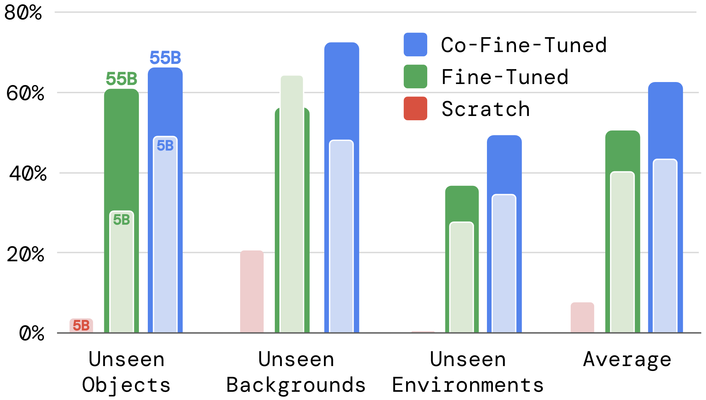

RT2: Vision-Language-Action Models
RT-2 model picking up object given the prompt "pick up the extinct animal."
RT-2 model picking up object given the prompt "pick up the extinct animal."
We study how vision-language models trained on Internet-scale data can be incorporated directly into end-to-end robotic control to boost generalization and enable emergent semantic reasoning. Our goal is to enable a single end-to-end trained model to both learn to map robot observations to actions and enjoy the benefits of large-scale pretraining on language and vision-language data from the web. To this end, we propose to co-fine-tune state-of-the-art vision-language models on both robotic trajectory data and Internet-scale vision-language tasks, such as visual question answering. In contrast to other approaches, we propose a simple, general recipe to achieve this goal: in order to fit both natural language responses and robotic actions into the same format, we express the actions as text tokens and incorporate them directly into the training set of the model in the same way as natural language tokens. We refer to such category of models as vision-language-action models (VLA) and instantiate an example of such a model, which we call RT-2. Our extensive evaluation (6k evaluation trials) shows that our approach leads to performant robotic policies and enables RT-2 to obtain a range of emergent capabilities from Internet-scale training. This includes significantly improved generalization to novel objects, the ability to interpret commands not present in the robot training data (such as placing an object onto a particular number or icon), and the ability to perform rudimentary reasoning in response to user commands (such as picking up the smallest or largest object, or the one closest to another object). We further show that incorporating chain of thought reasoning allows RT-2 to perform multi-stage semantic reasoning, for example figuring out which object to pick up for use as an improvised hammer (a rock), or which type of drink is best suited for someone who is too sleepy (an energy drink).
To make RT-2 easily compatible with large, pre-trained vision-language models, our recipe is simple: we represent robot actions as another language, which can be cast into text tokens and trained together with Internet-scale vision-language datasets. In particular, we co-fine-tune (a combination of fine-tuning and co-training where we keep some of the old vision & text data around) an existing vision-language model with robot data. The robot data includes the current image, language command and the robot action at the particular time step. We represent the robot actions as text strings as shown below. An example of such a string could be a sequence of robot action token numbers: “1 128 91 241 5 101 127 217”.

Since actions are represented as text strings, one can think of them as another language that allows us to operate the robot. This simple representation makes it straightforward to fine-tune any existing vision-language model and turn it into a vision-language-action model
During inference, the text tokens are de-tokenized into robot actions, enabling closed loop control. This allows us to leverage the backbone and pretraining of vision-language models in learning robotic policies, transferring some of their generalization, semantic understanding, and reasoning to robotic control.

We start the evaluation of RT-2 with testing the emergent properties of the model. Since we can't fully anticipate the extend of RT-2's generalization, we present a number of previously unseen objects to the robot and evaluate its performance on tasks that require semantic understanding that goes far beyond the robot data that the model was fine-tuned on. You can see qualitative examples of successful tasks that we found surprising below:

To quantify the emergent properties of RT-2, we categorize them into: symbol understanding, reasoning and human recognition and evaluate two variants of RT-2:
against its predecessor - RT-1 and another visual pre-training method - VC-1. The results below demonstrate a significant improvement of RT-2 compared to the baselines (3x).
We evaluate the two variants of RT-2, together with more baselines in a blind A/B study and present the results across multiple generalization axes below. The resulting generalization improvement of RT-2 is approximately 2x.
To better understand how different design choices of RT-2 impact the generalization results we ablate the two most significant design decisions:

We also evaluate RT-2 on an open-source language-table benchmark where we train RT-2 on simulation and real language-table data. In addition to achieving the state-of-the-art result on the simulation benchmark (90% vs 77% of the previous SoTA), we evaluate the resulting model in the real world. We demonstrate RT-2's generalization capabilities with the objects never seen in language table datasets before such as ketchup bottle, banana and others:

Lastly, since the resulting RT-2 PaLM-E version of the model is a vision-language-action model that can act as an LLM, VLM and a robotic controller all in a single neural network, we demonstrate that RT-2 can perform chain-of-thought reasoning for control. In the examples below RT-2 first outputs a few reasoning steps in natural language which are then followed by the string: `Action:` and the resulting action tokens.

This shows the promise of fully integrated VLA models that can transfer not only some of the semantic concepts across different modalities (e.g. generalize robot actions to new semantic categories) but also some of the properties of the underlying models (e.g. chain-of-thought reasoning).
![move vw to germany;move_vw_to_germany.mp4;delta position:0.00,0.03,0.00 delta rotation:0.01,0.01,0.09 gripper: -0.00L delta position:0.02,0.04,0.01 delta rotation:0.01,-0.03,0.17 gripper: -0.00L delta position:0.02,0.04,0.01 delta rotation:0.01,-0.03,0.13 gripper: -0.00L delta position:0.00,0.13,-0.00 delta rotation:0.06,0.06,0.28 gripper: -0.00L delta position:0.01,0.14,-0.01 delta rotation:0.01,-0.02,0.44 gripper: -0.00L delta position:0.01,0.12,-0.04 delta rotation:-0.02,0.04,0.46 gripper: -0.00L delta position:-0.04,0.19,-0.04 delta rotation:0.10,-0.03,0.65 gripper: -0.00L delta position:-0.02,0.13,-0.07 delta rotation:-0.04,0.07,0.44 gripper: -0.00L delta position:-0.07,0.11,-0.10 delta rotation:-0.13,0.10,0.52 gripper: -0.00L delta position:-0.04,0.08,-0.10 delta rotation:-0.28,0.06,0.50 gripper: -0.00L delta position:-0.07,0.09,-0.09 delta rotation:-0.19,0.06,0.40 gripper: -0.00L delta position:-0.04,0.07,-0.07 delta rotation:-0.22,0.04,0.38 gripper: -0.00L delta position:-0.02,0.04,-0.07 delta rotation:-0.22,0.01,0.26 gripper: -0.00L delta position:-0.00,-0.00,-0.03 delta rotation:-0.02,0.08,0.01 gripper: 1.00L delta position:-0.00,-0.03,-0.00 delta rotation:-0.08,-0.01,0.01 gripper: 0.83L delta position:0.07,-0.04,0.04 delta rotation:-0.02,-0.13,-0.09 gripper: 0.51L delta position:0.07,-0.04,0.04 delta rotation:-0.02,-0.09,-0.15 gripper: 0.58L delta position:0.07,-0.04,0.04 delta rotation:-0.01,-0.10,0.02 gripper: 0.53L delta position:0.07,-0.04,0.04 delta rotation:0.01,-0.12,-0.03 gripper: 0.44L delta position:0.12,-0.11,0.07 delta rotation:-0.01,-0.43,0.30 gripper: 0.15L delta position:0.03,-0.04,0.04 delta rotation:0.15,-0.13,-0.04 gripper: 0.62L delta position:0.04,-0.10,0.02 delta rotation:0.02,-0.04,-0.15 gripper: -0.00L delta position:0.07,-0.11,0.02 delta rotation:0.04,-0.04,-0.15 gripper: -0.00L delta position:0.07,-0.11,0.02 delta rotation:0.04,0.02,-0.24 gripper: -0.00L delta position:0.07,-0.11,0.02 delta rotation:0.04,0.02,-0.24 gripper: -0.00L delta position:0.06,-0.10,-0.02 delta rotation:-0.07,-0.03,-0.15 gripper: -0.00L delta position:-0.00,-0.03,-0.07 delta rotation:-0.06,0.15,-0.01 gripper: -0.00L delta position:0.02,-0.04,-0.05 delta rotation:-0.06,0.08,0.02 gripper: -0.00L delta position:-0.03,0.04,-0.05 delta rotation:-0.03,0.12,0.12 gripper: -0.00L delta position:0.00,-0.00,-0.01 delta rotation:-0.01,0.04,0.02 gripper: -0.00L delta position:-0.01,0.01,-0.02 delta rotation:0.02,0.04,0.04 gripper: -0.60L delta position:0.00,-0.00,-0.01 delta rotation:-0.01,0.04,0.01 gripper: -0.00L delta position:-0.00,0.00,-0.02 delta rotation:0.01,0.06,0.01 gripper: -1.00L delta position:0.00,-0.01,-0.01 delta rotation:-0.01,0.04,-0.01 gripper: -0.00L delta position:-0.00,-0.00,-0.00 delta rotation:-0.01,-0.02,-0.01 gripper: -0.15L delta position:-0.00,-0.00,-0.00 delta rotation:-0.01,-0.02,-0.01 gripper: -0.15L delta position:-0.01,-0.00,-0.02 delta rotation:-0.02,0.06,0.01 gripper: -0.14L delta position:-0.00,-0.00,-0.00 delta rotation:-0.01,-0.02,-0.01 gripper: -0.15L delta position:-0.00,-0.00,-0.00 delta rotation:-0.01,-0.02,-0.01 gripper: -0.15L delta position:-0.00,-0.00,-0.00 delta rotation:-0.01,-0.02,-0.01 gripper: -0.15L delta position:-0.00,-0.00,-0.00 delta rotation:-0.01,-0.02,-0.01 gripper: -0.15L delta position:-0.00,-0.00,-0.00 delta rotation:-0.01,-0.02,-0.01 gripper: -0.15L delta position:-0.00,-0.00,-0.00 delta rotation:-0.01,-0.02,-0.01 gripper: -0.15L delta position:-0.00,-0.00,-0.00 delta rotation:-0.01,-0.01,-0.01 gripper: -0.06L delta position:-0.00,-0.00,-0.00 delta rotation:-0.01,-0.01,-0.01 gripper: -0.06L delta position:-0.00,-0.00,-0.01 delta rotation:-0.06,0.04,-0.02 gripper: 1.00L delta position:-0.00,-0.00,-0.01 delta rotation:-0.06,0.04,-0.01 gripper: 1.00L delta position:0.00,-0.01,-0.01 delta rotation:-0.08,0.04,-0.03 gripper: 1.00L delta position:-0.00,-0.00,-0.00 delta rotation:-0.01,-0.02,-0.01 gripper: -0.15L delta position:-0.00,-0.00,-0.00 delta rotation:-0.01,-0.01,-0.01 gripper: -0.14L delta position:-0.01,0.00,-0.02 delta rotation:0.01,0.04,-0.01 gripper: -0.00L delta position:-0.00,-0.00,-0.00 delta rotation:-0.01,-0.02,-0.01 gripper: -0.36L delta position:-0.00,-0.00,-0.00 delta rotation:-0.01,-0.02,-0.01 gripper: -0.36L delta position:-0.00,-0.00,-0.00 delta rotation:-0.01,-0.01,-0.01 gripper: -0.37L delta position:-0.00,-0.00,-0.00 delta rotation:0.01,-0.02,-0.01 gripper: -0.84L delta position:0.00,-0.00,-0.00 delta rotation:0.01,-0.03,-0.01 gripper: 0.37L delta position:-0.00,-0.00,-0.00 delta rotation:-0.01,-0.01,-0.01 gripper: -0.12L delta position:-0.00,-0.01,-0.00 delta rotation:0.01,0.03,-0.03 gripper: 1.00L delta position:-0.01,-0.01,-0.00 delta rotation:-0.02,0.03,-0.01 gripper: 0.81L delta position:0.00,-0.01,0.00 delta rotation:0.02,0.02,-0.03 gripper: 0.74L delta position:-0.00,-0.00,-0.00 delta rotation:-0.01,-0.02,-0.01 gripper: 0.28L delta position:-0.00,-0.00,-0.00 delta rotation:-0.01,-0.01,-0.01 gripper: -0.60L delta position:0.00,-0.01,0.00 delta rotation:0.02,-0.02,-0.01 gripper: 0.81L delta position:0.00,-0.01,0.00 delta rotation:0.02,0.01,-0.01 gripper: 0.82L delta position:0.00,-0.01,0.00 delta rotation:0.02,-0.02,-0.01 gripper: -0.06L delta position:0.00,-0.00,-0.01 delta rotation:0.01,0.01,-0.02 gripper: -0.10L delta position:0.00,-0.00,-0.01 delta rotation:0.01,0.01,-0.02 gripper: -0.18L delta position:0.00,-0.01,-0.02 delta rotation:-0.01,0.03,-0.02 gripper: 1.00L delta position:0.00,-0.00,-0.01 delta rotation:0.01,0.01,-0.02 gripper: -0.18L delta position:-0.00,-0.00,-0.00 delta rotation:-0.01,-0.02,-0.01 gripper: -0.15L delta position:-0.00,-0.00,-0.00 delta rotation:-0.01,-0.02,-0.01 gripper: -0.36L delta position:-0.00,-0.00,-0.00 delta rotation:-0.01,-0.01,-0.01 gripper: -0.60L delta position:0.00,-0.01,0.01 delta rotation:0.02,0.01,-0.06 gripper: 0.73L delta position:0.00,-0.01,0.00 delta rotation:-0.04,0.01,-0.01 gripper: 0.81L delta position:-0.01,-0.00,-0.00 delta rotation:0.01,0.07,0.01 gripper: 1.00L delta position:0.00,-0.01,0.00 delta rotation:-0.04,0.01,-0.01 gripper: 0.81L delta position:-0.00,-0.00,-0.00 delta rotation:0.01,-0.01,0.01 gripper: -0.36L delta position:-0.00,-0.01,-0.01 delta rotation:-0.01,0.02,-0.02 gripper: 0.82L delta position:-0.00,-0.01,-0.01 delta rotation:-0.02,0.02,-0.02 gripper: 0.81L delta position:-0.00,-0.00,-0.00 delta rotation:0.01,0.01,0.01 gripper: -0.14L delta position:-0.00,-0.01,-0.01 delta rotation:-0.02,0.03,-0.02 gripper: 1.00L delta position:-0.01,-0.00,-0.01 delta rotation:0.01,0.03,-0.01 gripper: 1.00L delta position:0.00,-0.01,0.00 delta rotation:0.02,-0.02,-0.01 gripper: 0.81L delta position:0.00,-0.01,0.00 delta rotation:0.02,0.04,-0.04 gripper: 0.81L delta position:0.00,-0.01,-0.03 delta rotation:-0.03,0.08,-0.06 gripper: 1.00L delta position:0.00,-0.01,-0.00 delta rotation:-0.04,-0.01,-0.02 gripper: 0.82L delta position:0.00,-0.01,-0.00 delta rotation:-0.04,-0.01,-0.02 gripper: 0.68L delta position:0.00,-0.01,-0.00 delta rotation:-0.04,-0.01,-0.01 gripper: 0.68L delta position:-0.00,-0.00,-0.01 delta rotation:0.01,0.02,-0.02 gripper: -0.41L delta position:-0.01,-0.01,-0.00 delta rotation:-0.04,0.04,-0.01 gripper: -0.12L delta position:0.00,-0.01,-0.00 delta rotation:-0.04,-0.01,-0.01 gripper: 0.74L delta position:-0.01,-0.01,-0.00 delta rotation:-0.04,0.04,-0.01 gripper: -0.14L delta position:-0.00,-0.00,-0.00 delta rotation:-0.01,-0.01,-0.01 gripper: -0.37L delta position:0.00,-0.01,0.00 delta rotation:0.02,0.04,-0.04 gripper: -0.14L delta position:-0.00,-0.00,-0.01 delta rotation:-0.02,0.02,-0.02 gripper: -0.12L delta position:-0.01,-0.01,-0.00 delta rotation:-0.04,0.04,-0.01 gripper: -0.14L delta position:-0.00,-0.00,-0.00 delta rotation:-0.01,-0.02,-0.01 gripper: -0.13L delta position:-0.00,-0.00,-0.00 delta rotation:-0.01,-0.02,-0.01 gripper: -0.13L delta position:-0.01,-0.00,0.00 delta rotation:-0.01,0.03,-0.01 gripper: 0.73L delta position:-0.00,-0.00,-0.00 delta rotation:-0.01,0.01,-0.01 gripper: 0.65L delta position:0.00,-0.01,-0.00 delta rotation:-0.04,0.01,-0.03 gripper: 0.74L delta position:-0.00,-0.00,-0.00 delta rotation:-0.01,-0.02,-0.01 gripper: -0.13L delta position:-0.00,-0.00,-0.00 delta rotation:-0.01,-0.02,-0.01 gripper: -0.36L delta position:-0.00,-0.00,-0.00 delta rotation:0.01,-0.02,-0.01 gripper: -0.13L delta position:-0.00,-0.00,0.02 delta rotation:-0.01,-0.03,0.02 gripper: 0.36L delta position:0.01,-0.00,0.06 delta rotation:0.03,-0.08,-0.13 gripper: 0.46L delta position:-0.00,-0.00,-0.00 delta rotation:0.01,-0.02,-0.01 gripper: -0.13L delta position:-0.00,-0.00,-0.01 delta rotation:-0.01,0.01,-0.03 gripper: -0.10L delta position:-0.01,-0.01,-0.04 delta rotation:-0.01,0.10,-0.08 gripper: -0.00L delta position:-0.01,-0.01,-0.03 delta rotation:-0.01,0.09,-0.04 gripper: -0.00L delta position:-0.00,-0.01,-0.01 delta rotation:-0.01,0.06,-0.02 gripper: -0.37L delta position:-0.01,-0.01,-0.01 delta rotation:-0.01,0.06,-0.01 gripper: -0.15L delta position:-0.00,-0.01,-0.00 delta rotation:-0.04,0.02,-0.01 gripper: -0.29L
[sep]move corvette to the US;move_corvette_to_the_US.mp4;delta position:-0.02,0.00,-0.01 delta rotation:0.07,0.02,0.12 gripper: -0.00L delta position:-0.00,0.00,-0.00 delta rotation:-0.03,0.01,0.04 gripper: -0.00L delta position:-0.00,0.00,-0.00 delta rotation:-0.03,0.01,0.04 gripper: -0.00L delta position:-0.02,0.03,-0.04 delta rotation:0.03,0.01,0.44 gripper: -0.00L delta position:-0.07,0.05,-0.06 delta rotation:0.04,0.09,0.55 gripper: -0.00L delta position:-0.07,0.05,-0.09 delta rotation:0.04,0.14,0.55 gripper: -0.00L delta position:-0.08,0.05,-0.11 delta rotation:-0.13,0.08,0.62 gripper: -0.00L delta position:-0.04,0.04,-0.09 delta rotation:-0.09,0.08,0.55 gripper: -0.00L delta position:-0.03,0.02,-0.09 delta rotation:-0.14,0.03,0.40 gripper: -0.00L delta position:0.00,0.01,-0.09 delta rotation:-0.14,0.08,0.17 gripper: -0.00L delta position:-0.01,0.01,-0.03 delta rotation:-0.12,0.02,0.13 gripper: 1.00L delta position:0.01,0.00,-0.01 delta rotation:-0.07,0.04,0.02 gripper: 1.00L delta position:0.04,-0.00,0.00 delta rotation:-0.07,-0.01,-0.02 gripper: 0.99L delta position:0.02,0.00,0.04 delta rotation:0.01,-0.03,0.02 gripper: 0.59L delta position:0.07,0.04,0.04 delta rotation:0.01,-0.19,0.20 gripper: 0.58L delta position:0.07,0.07,0.04 delta rotation:0.06,-0.08,0.28 gripper: 0.00L delta position:0.10,0.07,0.06 delta rotation:0.09,-0.07,-0.12 gripper: 0.06L delta position:0.04,0.06,0.00 delta rotation:0.08,-0.08,0.23 gripper: -0.00L delta position:0.03,0.09,0.01 delta rotation:0.01,-0.02,0.25 gripper: -0.00L delta position:-0.00,0.12,-0.00 delta rotation:-0.01,-0.06,0.40 gripper: -0.00L delta position:0.04,0.09,-0.00 delta rotation:0.01,-0.02,0.19 gripper: -0.00L delta position:0.03,0.08,0.00 delta rotation:0.07,0.02,0.35 gripper: -0.00L delta position:0.04,0.07,-0.00 delta rotation:0.04,0.01,0.07 gripper: -0.00L delta position:-0.01,0.06,-0.02 delta rotation:0.04,0.02,0.12 gripper: -0.00L delta position:0.00,0.00,-0.01 delta rotation:0.01,-0.01,-0.02 gripper: -0.81L delta position:0.00,0.02,-0.00 delta rotation:0.01,0.01,0.03 gripper: -0.51L delta position:0.00,0.04,-0.00 delta rotation:0.02,-0.02,0.06 gripper: -0.00L delta position:0.00,0.00,-0.01 delta rotation:0.01,0.01,-0.02 gripper: -0.30L delta position:0.00,0.00,-0.01 delta rotation:0.01,0.01,-0.02 gripper: -0.29L delta position:0.00,-0.01,0.00 delta rotation:0.01,-0.01,-0.02 gripper: -0.22L delta position:-0.00,-0.01,-0.00 delta rotation:0.01,0.01,0.01 gripper: 0.76L delta position:0.00,-0.01,0.00 delta rotation:0.01,-0.03,-0.03 gripper: 0.76L delta position:-0.00,-0.01,-0.00 delta rotation:0.01,0.01,0.01 gripper: 0.76L delta position:0.03,0.00,0.04 delta rotation:0.01,-0.06,0.04 gripper: 0.51L delta position:0.00,0.03,-0.00 delta rotation:0.01,-0.03,0.06 gripper: -0.00L delta position:0.02,-0.03,0.02 delta rotation:0.02,-0.02,-0.07 gripper: 0.36L delta position:0.00,-0.00,0.04 delta rotation:0.02,-0.10,0.04 gripper: 0.24L delta position:-0.00,-0.00,-0.00 delta rotation:-0.01,-0.01,-0.01 gripper: 0.12L delta position:0.00,0.00,0.01 delta rotation:0.07,-0.03,0.02 gripper: -0.00L delta position:-0.00,-0.00,-0.00 delta rotation:-0.01,-0.01,-0.01 gripper: 0.13L delta position:0.00,-0.01,-0.00 delta rotation:-0.01,-0.01,-0.02 gripper: -0.40L delta position:0.00,-0.02,0.00 delta rotation:0.02,-0.02,-0.07 gripper: 0.07L delta position:0.00,0.00,0.01 delta rotation:0.08,-0.03,0.02 gripper: -0.00L delta position:0.00,-0.01,0.00 delta rotation:0.01,-0.01,-0.02 gripper: -0.36L delta position:0.00,-0.01,0.00 delta rotation:-0.01,0.01,-0.02 gripper: 0.12L delta position:0.00,-0.00,0.00 delta rotation:0.01,-0.03,0.01 gripper: 0.12L delta position:0.00,-0.00,0.00 delta rotation:-0.01,-0.03,0.01 gripper: 0.06L delta position:0.00,-0.01,0.00 delta rotation:0.01,-0.01,-0.02 gripper: -0.18L delta position:-0.00,-0.00,-0.00 delta rotation:-0.01,-0.01,-0.01 gripper: -0.00L delta position:0.00,-0.00,0.00 delta rotation:0.01,-0.03,0.01 gripper: -0.33L delta position:0.00,0.04,0.00 delta rotation:0.06,-0.03,0.08 gripper: -0.00L delta position:0.00,-0.01,0.00 delta rotation:0.01,-0.01,-0.02 gripper: -0.36L delta position:0.00,-0.00,0.00 delta rotation:-0.01,-0.03,0.01 gripper: 0.12L delta position:0.00,0.04,0.00 delta rotation:0.07,0.01,0.06 gripper: -0.00L delta position:0.00,0.05,0.00 delta rotation:0.07,-0.03,0.09 gripper: -0.00L delta position:-0.00,-0.00,-0.00 delta rotation:-0.01,-0.01,-0.01 gripper: -0.39L delta position:-0.00,0.00,-0.00 delta rotation:-0.01,-0.01,0.01 gripper: -1.00L delta position:-0.00,-0.00,-0.00 delta rotation:-0.01,-0.01,-0.01 gripper: -0.14L delta position:0.03,0.00,-0.02 delta rotation:-0.06,-0.01,0.01 gripper: 0.82L delta position:0.04,-0.04,-0.04 delta rotation:0.01,0.06,-0.09 gripper: -0.00L delta position:0.00,0.00,0.00 delta rotation:-0.01,0.01,-0.01 gripper: 0.83L delta position:-0.00,-0.01,0.03 delta rotation:0.08,-0.03,-0.03 gripper: 0.58L delta position:-0.00,-0.00,-0.00 delta rotation:-0.01,-0.01,-0.01 gripper: -0.36L delta position:0.02,0.00,-0.00 delta rotation:-0.03,-0.04,-0.03 gripper: -0.31L delta position:0.00,0.04,-0.02 delta rotation:-0.02,0.02,0.07 gripper: -0.00L delta position:-0.00,0.00,-0.00 delta rotation:0.01,-0.01,0.01 gripper: -1.00L delta position:-0.00,-0.00,-0.00 delta rotation:-0.01,-0.01,-0.01 gripper: -0.05L delta position:-0.00,-0.00,-0.00 delta rotation:-0.01,-0.01,-0.01 gripper: -0.05L delta position:0.02,-0.01,0.01 delta rotation:0.02,-0.01,-0.01 gripper: 0.85L delta position:0.01,-0.01,0.01 delta rotation:0.02,-0.03,-0.01 gripper: 0.62L delta position:-0.00,-0.00,-0.00 delta rotation:-0.01,-0.01,-0.01 gripper: -0.13L delta position:0.00,0.05,-0.03 delta rotation:0.04,0.04,0.15 gripper: -0.00L delta position:0.00,0.05,-0.03 delta rotation:0.06,0.04,0.15 gripper: -1.00L delta position:0.00,0.05,-0.00 delta rotation:0.06,-0.02,0.15 gripper: -0.00L delta position:0.00,0.00,0.02 delta rotation:0.08,-0.03,0.02 gripper: 0.58L delta position:0.00,-0.01,0.02 delta rotation:0.04,-0.02,0.01 gripper: 0.36L delta position:0.00,0.00,0.00 delta rotation:0.06,-0.02,0.03 gripper: 0.12L delta position:0.00,0.05,0.01 delta rotation:0.03,-0.03,0.12 gripper: -0.00L delta position:0.00,0.00,0.00 delta rotation:-0.01,-0.01,0.04 gripper: -0.84L delta position:0.00,0.00,0.00 delta rotation:0.03,-0.02,0.02 gripper: -0.37L delta position:0.00,-0.02,0.02 delta rotation:0.04,-0.03,0.02 gripper: 0.59L delta position:-0.00,-0.00,-0.00 delta rotation:-0.01,-0.01,-0.01 gripper: -0.29L delta position:0.00,0.00,0.00 delta rotation:0.03,-0.02,0.02 gripper: -0.00L delta position:-0.00,-0.00,-0.00 delta rotation:-0.01,-0.01,-0.01 gripper: -0.07L delta position:-0.00,-0.00,-0.00 delta rotation:-0.01,-0.01,-0.01 gripper: -0.05L delta position:0.00,-0.01,0.00 delta rotation:0.01,0.01,0.03 gripper: 0.75L delta position:0.00,-0.01,0.01 delta rotation:0.03,-0.02,-0.03 gripper: -0.16L delta position:-0.00,-0.00,-0.00 delta rotation:-0.01,-0.01,-0.01 gripper: -0.29L delta position:-0.00,-0.00,-0.00 delta rotation:-0.01,-0.01,-0.01 gripper: -0.29L delta position:-0.00,-0.00,-0.00 delta rotation:-0.01,-0.01,-0.01 gripper: -0.29L delta position:-0.00,0.00,0.00 delta rotation:0.03,-0.01,0.02 gripper: -0.00L delta position:-0.01,0.00,0.00 delta rotation:0.03,-0.03,0.04 gripper: -0.00L delta position:0.00,0.00,0.00 delta rotation:0.01,-0.02,0.04 gripper: -0.00L delta position:-0.00,-0.00,-0.00 delta rotation:-0.01,-0.01,-0.01 gripper: -0.05L delta position:-0.00,-0.00,-0.00 delta rotation:-0.01,-0.01,-0.01 gripper: -0.05L delta position:0.01,-0.04,0.00 delta rotation:-0.02,-0.06,-0.03 gripper: 0.62L delta position:-0.00,-0.00,-0.00 delta rotation:-0.01,-0.01,-0.01 gripper: -0.05L delta position:-0.00,-0.00,-0.00 delta rotation:-0.01,-0.01,-0.01 gripper: -0.14L delta position:0.00,0.05,-0.02 delta rotation:-0.01,0.02,0.08 gripper: -0.00L delta position:0.00,0.00,0.00 delta rotation:0.01,-0.02,0.02 gripper: 0.59L delta position:-0.00,-0.00,-0.00 delta rotation:-0.01,-0.01,-0.01 gripper: -0.12L delta position:0.00,-0.01,0.02 delta rotation:0.06,-0.02,-0.02 gripper: 0.59L delta position:0.00,0.04,0.00 delta rotation:0.04,-0.03,0.07 gripper: -0.00L delta position:0.00,0.05,0.00 delta rotation:0.03,-0.03,0.12 gripper: -0.00L delta position:-0.00,-0.00,-0.00 delta rotation:-0.01,-0.01,-0.01 gripper: -0.29L delta position:-0.00,-0.02,0.02 delta rotation:0.04,-0.03,0.02 gripper: 0.58L delta position:0.01,-0.02,0.02 delta rotation:0.03,-0.04,-0.03 gripper: 0.12L delta position:0.00,-0.03,0.02 delta rotation:0.01,-0.04,-0.03 gripper: 0.12L delta position:-0.00,-0.00,-0.00 delta rotation:-0.01,-0.01,-0.01 gripper: -0.29L delta position:-0.00,-0.00,-0.00 delta rotation:-0.01,-0.01,-0.01 gripper: -0.29L delta position:-0.00,-0.00,-0.00 delta rotation:-0.01,-0.01,-0.01 gripper: -0.14L delta position:-0.00,-0.00,-0.00 delta rotation:-0.01,-0.01,-0.01 gripper: -1.00L delta position:-0.00,-0.00,-0.00 delta rotation:-0.01,-0.01,-0.01 gripper: -0.29L](videos/demos/car.png)
![move pumpkin to 2;move_pumpkin_to_2.mp4;delta position:-0.01,0.00,-0.01 delta rotation:0.01,0.03,0.02 gripper: -0.00L delta position:-0.01,0.00,-0.01 delta rotation:0.01,0.03,0.01 gripper: -0.00L delta position:-0.01,0.00,-0.01 delta rotation:0.01,0.03,0.01 gripper: -0.00L delta position:-0.02,0.00,-0.04 delta rotation:0.06,0.03,0.13 gripper: -0.00L delta position:-0.07,0.04,-0.06 delta rotation:0.19,0.17,0.36 gripper: -0.00L delta position:-0.06,0.05,-0.06 delta rotation:0.19,0.08,0.25 gripper: -0.00L delta position:-0.05,0.06,-0.08 delta rotation:0.04,0.09,0.29 gripper: -0.00L delta position:-0.05,0.05,-0.10 delta rotation:0.10,0.07,0.19 gripper: -0.00L delta position:-0.03,0.03,-0.07 delta rotation:0.02,0.06,0.13 gripper: -0.00L delta position:-0.01,0.03,-0.06 delta rotation:0.06,0.06,0.06 gripper: -0.00L delta position:0.00,0.00,-0.02 delta rotation:0.01,0.02,-0.02 gripper: 1.00L delta position:0.01,-0.00,-0.01 delta rotation:-0.01,-0.01,-0.02 gripper: 1.00L delta position:0.02,-0.00,-0.01 delta rotation:0.01,-0.01,-0.02 gripper: 1.00L delta position:0.02,0.00,0.02 delta rotation:-0.01,-0.01,-0.04 gripper: 0.74L delta position:0.10,0.03,0.06 delta rotation:-0.06,-0.07,-0.17 gripper: 0.29L delta position:0.08,0.01,0.06 delta rotation:-0.01,-0.07,-0.10 gripper: 0.36L delta position:0.12,0.05,0.06 delta rotation:0.06,-0.07,-0.10 gripper: 0.35L delta position:0.11,0.04,0.00 delta rotation:0.06,-0.07,-0.17 gripper: -0.00L delta position:0.11,0.04,0.00 delta rotation:0.07,-0.07,-0.10 gripper: -0.00L delta position:0.09,0.04,0.00 delta rotation:0.06,-0.01,-0.01 gripper: -0.00L delta position:0.07,0.07,-0.00 delta rotation:0.03,0.01,0.02 gripper: -0.00L delta position:0.05,0.08,-0.01 delta rotation:0.06,0.01,0.02 gripper: -0.00L delta position:0.04,0.07,-0.01 delta rotation:0.01,-0.02,-0.01 gripper: -0.00L delta position:0.04,0.05,-0.01 delta rotation:0.01,-0.03,0.01 gripper: -0.00L delta position:0.05,0.04,-0.01 delta rotation:-0.01,-0.01,0.01 gripper: -0.00L delta position:0.00,0.00,-0.02 delta rotation:-0.02,0.01,-0.02 gripper: -0.82L delta position:-0.00,0.00,-0.00 delta rotation:-0.02,0.01,0.01 gripper: -0.60L delta position:0.00,0.00,-0.02 delta rotation:-0.03,0.01,0.03 gripper: -0.60L delta position:-0.00,0.00,-0.00 delta rotation:0.02,0.01,0.01 gripper: -0.58L delta position:-0.00,-0.00,-0.00 delta rotation:-0.01,-0.01,-0.01 gripper: -0.28L delta position:-0.00,-0.00,-0.00 delta rotation:-0.01,-0.01,-0.01 gripper: -0.36L delta position:-0.00,-0.00,-0.00 delta rotation:-0.01,-0.01,-0.01 gripper: -0.36L delta position:-0.00,-0.00,-0.00 delta rotation:-0.01,-0.01,-0.01 gripper: -0.00L delta position:-0.00,-0.00,-0.00 delta rotation:-0.01,-0.01,-0.01 gripper: -0.00L delta position:-0.00,-0.00,-0.00 delta rotation:-0.01,-0.01,-0.01 gripper: -0.00L delta position:-0.00,-0.00,-0.00 delta rotation:-0.01,-0.01,-0.01 gripper: -0.00L delta position:0.00,-0.00,0.00 delta rotation:-0.01,0.01,0.03 gripper: 0.85L delta position:-0.00,-0.00,-0.00 delta rotation:-0.01,-0.01,-0.01 gripper: -0.00L delta position:-0.00,-0.00,-0.00 delta rotation:-0.01,-0.01,-0.01 gripper: -0.00L delta position:-0.00,-0.00,-0.00 delta rotation:-0.01,-0.01,-0.01 gripper: -0.05L delta position:-0.00,-0.00,-0.00 delta rotation:-0.01,-0.01,-0.01 gripper: -0.00L delta position:-0.00,-0.00,-0.00 delta rotation:-0.01,-0.01,-0.01 gripper: -0.00L delta position:-0.00,-0.00,-0.00 delta rotation:-0.01,-0.01,-0.01 gripper: -0.00L delta position:0.00,0.00,0.00 delta rotation:-0.01,-0.01,-0.01 gripper: 1.00L delta position:-0.00,-0.00,-0.00 delta rotation:-0.01,-0.01,-0.01 gripper: -0.06L delta position:0.00,0.00,0.00 delta rotation:-0.01,0.01,-0.01 gripper: 0.68L delta position:-0.00,-0.00,-0.00 delta rotation:-0.01,-0.01,-0.01 gripper: -0.36L delta position:-0.00,-0.00,-0.00 delta rotation:-0.01,-0.01,-0.01 gripper: -0.36L delta position:-0.00,-0.00,-0.00 delta rotation:-0.01,-0.01,-0.01 gripper: -0.30L delta position:-0.00,-0.00,-0.00 delta rotation:-0.01,-0.01,-0.01 gripper: -0.28L delta position:-0.00,-0.00,-0.00 delta rotation:-0.01,-0.01,-0.01 gripper: -0.00L delta position:-0.00,-0.00,-0.00 delta rotation:-0.01,-0.01,-0.01 gripper: -0.00L delta position:-0.00,-0.00,-0.00 delta rotation:-0.01,-0.01,-0.01 gripper: -0.00L delta position:0.00,0.00,0.00 delta rotation:0.03,0.02,0.01 gripper: 0.84L delta position:0.00,0.00,0.00 delta rotation:0.03,0.01,0.02 gripper: -0.00L delta position:0.00,0.00,0.00 delta rotation:0.03,0.02,0.01 gripper: 0.83L delta position:-0.00,-0.00,-0.00 delta rotation:-0.01,-0.01,-0.01 gripper: -0.14L delta position:0.00,0.00,0.00 delta rotation:0.03,0.02,-0.01 gripper: 1.00L delta position:-0.00,-0.00,-0.00 delta rotation:-0.01,-0.01,-0.01 gripper: -0.06L delta position:0.00,-0.02,0.04 delta rotation:0.08,0.04,0.04 gripper: -0.00L delta position:-0.00,-0.00,-0.00 delta rotation:0.01,0.01,-0.01 gripper: -0.07L delta position:-0.00,-0.00,-0.00 delta rotation:-0.01,-0.01,-0.01 gripper: -0.00L delta position:-0.00,-0.00,-0.00 delta rotation:-0.01,-0.01,-0.01 gripper: -0.00L delta position:-0.00,-0.00,-0.00 delta rotation:-0.01,-0.01,-0.01 gripper: -0.00L delta position:0.00,0.00,0.00 delta rotation:0.08,0.01,0.02 gripper: -0.00L delta position:-0.00,-0.00,-0.00 delta rotation:-0.01,-0.01,-0.01 gripper: -0.00L delta position:-0.00,-0.00,-0.00 delta rotation:-0.01,-0.01,-0.01 gripper: -0.00L delta position:-0.01,0.00,0.00 delta rotation:0.03,0.01,0.04 gripper: 0.91L delta position:0.00,0.00,0.00 delta rotation:0.03,0.02,-0.01 gripper: 1.00L delta position:0.00,0.00,0.00 delta rotation:0.02,-0.01,0.01 gripper: 1.00L delta position:-0.00,-0.00,-0.00 delta rotation:-0.01,-0.01,-0.01 gripper: -0.13L delta position:-0.00,-0.00,-0.00 delta rotation:-0.01,-0.01,-0.01 gripper: -0.13L delta position:-0.00,-0.00,-0.00 delta rotation:-0.01,-0.01,-0.01 gripper: -0.15L delta position:-0.00,-0.00,-0.00 delta rotation:-0.01,-0.01,-0.01 gripper: -0.09L delta position:-0.00,-0.00,-0.00 delta rotation:-0.01,-0.01,-0.01 gripper: -0.14L delta position:-0.00,-0.00,-0.00 delta rotation:-0.01,-0.01,-0.01 gripper: -0.07L delta position:-0.00,-0.00,-0.00 delta rotation:-0.01,-0.01,-0.01 gripper: -0.36L delta position:-0.00,-0.00,-0.00 delta rotation:-0.01,-0.01,-0.01 gripper: -0.36L delta position:-0.00,-0.00,-0.00 delta rotation:-0.01,-0.01,-0.01 gripper: -0.36L delta position:-0.00,-0.00,-0.00 delta rotation:-0.01,-0.01,-0.01 gripper: -0.36L delta position:-0.00,-0.00,-0.00 delta rotation:-0.01,-0.01,-0.01 gripper: -0.36L delta position:-0.00,-0.00,-0.00 delta rotation:-0.01,-0.01,-0.01 gripper: -0.14L delta position:0.00,0.00,0.00 delta rotation:0.03,0.03,-0.01 gripper: 1.00L delta position:-0.00,-0.00,-0.00 delta rotation:-0.01,-0.01,-0.01 gripper: -0.00L delta position:-0.01,-0.01,0.03 delta rotation:0.08,0.07,0.04 gripper: -0.00L delta position:-0.00,-0.00,-0.00 delta rotation:-0.01,-0.01,-0.01 gripper: -0.28L delta position:-0.00,-0.00,-0.00 delta rotation:-0.01,-0.01,-0.01 gripper: -0.28L delta position:-0.00,-0.00,-0.00 delta rotation:-0.01,-0.01,-0.01 gripper: -0.00L delta position:-0.00,-0.00,-0.00 delta rotation:-0.01,-0.01,-0.01 gripper: -0.00L delta position:0.00,0.00,0.00 delta rotation:0.08,0.06,-0.02 gripper: 1.00L delta position:-0.00,-0.00,-0.00 delta rotation:-0.01,-0.01,-0.01 gripper: -0.00L delta position:-0.00,-0.00,-0.00 delta rotation:-0.01,-0.01,-0.01 gripper: -0.00L delta position:-0.00,-0.00,-0.00 delta rotation:-0.01,-0.01,-0.01 gripper: -0.05L delta position:-0.00,-0.00,-0.00 delta rotation:-0.01,-0.01,-0.01 gripper: -0.06L delta position:-0.00,-0.00,-0.00 delta rotation:-0.01,-0.01,-0.01 gripper: -0.00L delta position:-0.00,-0.00,-0.00 delta rotation:-0.01,-0.01,-0.01 gripper: -0.06L delta position:-0.00,-0.00,-0.00 delta rotation:-0.01,-0.01,-0.01 gripper: -0.06L delta position:-0.00,-0.00,-0.00 delta rotation:-0.01,-0.01,-0.01 gripper: -0.06L delta position:-0.00,-0.00,-0.00 delta rotation:-0.01,-0.01,-0.01 gripper: -0.00L delta position:-0.00,-0.00,-0.00 delta rotation:-0.01,-0.01,-0.01 gripper: -0.00L delta position:-0.00,-0.00,-0.00 delta rotation:-0.01,-0.01,-0.01 gripper: -0.00L delta position:-0.00,-0.00,-0.00 delta rotation:-0.01,-0.01,-0.01 gripper: -0.00L delta position:-0.00,-0.00,-0.00 delta rotation:-0.01,-0.01,-0.01 gripper: -0.00L delta position:-0.00,-0.00,-0.00 delta rotation:-0.01,-0.01,-0.01 gripper: -0.00L delta position:-0.00,-0.00,-0.00 delta rotation:-0.01,-0.01,-0.01 gripper: -0.00L delta position:0.00,-0.01,0.04 delta rotation:0.08,-0.01,0.03 gripper: -0.00L delta position:-0.00,-0.00,-0.00 delta rotation:-0.01,-0.01,-0.01 gripper: -0.00L delta position:-0.00,-0.00,-0.00 delta rotation:-0.01,-0.01,-0.01 gripper: -0.06L delta position:-0.00,-0.00,-0.00 delta rotation:-0.01,-0.01,-0.01 gripper: -0.00L delta position:-0.00,-0.00,-0.00 delta rotation:-0.01,-0.01,-0.01 gripper: -0.00L delta position:0.00,0.00,0.00 delta rotation:0.03,0.04,-0.03 gripper: -0.00L delta position:0.00,-0.03,0.03 delta rotation:0.06,-0.01,-0.04 gripper: -0.00L delta position:0.00,-0.03,0.03 delta rotation:0.06,-0.01,-0.04 gripper: -0.00L
[sep]move pumpkin to 6;move_pumpkin_to_6.mp4;delta position:-0.03,0.03,-0.04 delta rotation:0.12,0.07,0.13 gripper: -0.00L delta position:-0.03,0.00,-0.04 delta rotation:0.06,-0.02,0.09 gripper: -0.00L delta position:-0.03,0.00,-0.04 delta rotation:0.06,-0.02,0.09 gripper: -0.00L delta position:-0.05,0.05,-0.09 delta rotation:0.17,0.12,0.19 gripper: -0.00L delta position:-0.05,0.05,-0.08 delta rotation:0.14,0.06,0.18 gripper: -0.00L delta position:-0.04,0.05,-0.09 delta rotation:0.17,0.06,0.13 gripper: -0.00L delta position:-0.02,0.03,-0.07 delta rotation:0.06,0.04,0.10 gripper: -0.00L delta position:-0.01,0.02,-0.05 delta rotation:-0.02,0.06,0.06 gripper: -0.00L delta position:0.00,0.00,-0.03 delta rotation:-0.01,0.03,-0.01 gripper: 1.00L delta position:0.00,0.00,-0.02 delta rotation:0.01,0.02,-0.02 gripper: 1.00L delta position:0.01,-0.02,-0.01 delta rotation:-0.01,0.01,-0.06 gripper: 1.00L delta position:0.04,-0.02,0.04 delta rotation:0.01,-0.07,-0.09 gripper: 0.62L delta position:0.07,-0.00,0.09 delta rotation:0.01,-0.09,-0.10 gripper: 0.36L delta position:0.12,-0.04,0.04 delta rotation:0.01,-0.04,-0.30 gripper: 0.12L delta position:0.13,-0.06,0.04 delta rotation:0.06,0.02,-0.34 gripper: 0.12L delta position:0.10,-0.06,0.01 delta rotation:0.06,-0.04,-0.22 gripper: -0.00L delta position:0.05,0.04,-0.01 delta rotation:0.01,-0.02,-0.01 gripper: -0.00L delta position:0.05,-0.04,-0.01 delta rotation:0.06,0.02,-0.20 gripper: -0.00L delta position:0.05,0.04,-0.01 delta rotation:0.01,-0.03,0.07 gripper: -0.00L delta position:0.03,-0.01,-0.00 delta rotation:-0.01,-0.06,-0.03 gripper: -0.00L delta position:0.03,0.00,-0.02 delta rotation:0.01,-0.03,-0.03 gripper: -1.00L delta position:0.01,-0.00,-0.03 delta rotation:0.02,0.03,0.03 gripper: -1.00L delta position:0.00,-0.01,-0.02 delta rotation:-0.01,0.03,-0.03 gripper: -0.60L delta position:0.00,0.01,-0.00 delta rotation:0.01,0.01,0.03 gripper: -1.00L delta position:0.00,0.01,-0.00 delta rotation:0.01,0.01,0.03 gripper: -1.00L delta position:-0.00,-0.00,-0.00 delta rotation:-0.02,-0.01,-0.01 gripper: -0.36L delta position:-0.00,-0.00,-0.00 delta rotation:-0.01,-0.01,-0.01 gripper: -0.60L delta position:0.00,0.00,0.03 delta rotation:0.03,-0.03,0.03 gripper: 0.81L delta position:0.00,0.00,0.03 delta rotation:0.03,-0.03,0.03 gripper: 0.81L delta position:0.00,-0.00,-0.00 delta rotation:-0.02,0.01,0.02 gripper: -0.51L delta position:-0.01,0.02,0.03 delta rotation:0.03,-0.04,0.09 gripper: 0.58L delta position:-0.00,-0.00,-0.00 delta rotation:-0.01,-0.01,-0.01 gripper: -0.60L delta position:0.00,0.01,-0.00 delta rotation:0.01,0.01,0.03 gripper: -1.00L delta position:-0.00,-0.00,-0.00 delta rotation:-0.01,-0.01,-0.01 gripper: -0.62L delta position:-0.00,-0.00,-0.00 delta rotation:-0.01,-0.01,-0.01 gripper: -0.15L delta position:-0.00,0.00,-0.00 delta rotation:0.01,0.03,0.02 gripper: 0.82L delta position:0.00,-0.00,-0.01 delta rotation:0.01,0.02,0.01 gripper: 0.81L delta position:-0.00,0.00,0.00 delta rotation:0.01,0.01,0.01 gripper: 0.81L delta position:0.00,0.01,-0.00 delta rotation:0.01,0.01,0.03 gripper: -1.00L delta position:-0.00,-0.00,-0.00 delta rotation:-0.01,-0.01,-0.01 gripper: -0.37L delta position:0.00,0.01,-0.00 delta rotation:0.01,0.01,0.03 gripper: -1.00L delta position:0.00,0.01,0.00 delta rotation:0.01,0.01,0.03 gripper: -0.52L delta position:0.00,-0.00,0.00 delta rotation:0.01,-0.01,0.01 gripper: -0.36L delta position:0.00,0.01,0.03 delta rotation:0.03,-0.03,0.03 gripper: 0.58L delta position:0.00,-0.00,-0.01 delta rotation:0.01,0.01,-0.01 gripper: -0.14L delta position:0.00,-0.00,-0.01 delta rotation:0.01,0.02,0.01 gripper: -0.84L delta position:-0.00,-0.00,-0.00 delta rotation:-0.01,-0.01,-0.01 gripper: -0.15L delta position:-0.00,-0.00,-0.00 delta rotation:-0.02,-0.01,0.01 gripper: 0.81L delta position:0.00,-0.00,-0.00 delta rotation:0.01,-0.01,-0.02 gripper: 0.85L delta position:0.00,0.00,-0.00 delta rotation:-0.02,0.01,0.01 gripper: 0.86L delta position:0.00,-0.00,-0.00 delta rotation:0.01,-0.01,0.01 gripper: -0.36L delta position:0.00,-0.00,-0.00 delta rotation:0.01,-0.01,0.01 gripper: -0.36L delta position:0.00,-0.00,-0.00 delta rotation:0.01,-0.01,0.01 gripper: -0.36L delta position:0.00,-0.00,-0.00 delta rotation:-0.01,-0.01,0.01 gripper: -0.36L delta position:0.00,-0.00,-0.00 delta rotation:0.01,-0.01,-0.01 gripper: -0.44L delta position:0.00,-0.00,-0.00 delta rotation:0.01,-0.01,0.01 gripper: -0.36L delta position:0.00,-0.00,-0.00 delta rotation:0.01,-0.01,0.01 gripper: -0.28L delta position:0.00,0.01,0.04 delta rotation:0.09,-0.08,0.06 gripper: 0.36L delta position:0.00,-0.01,-0.00 delta rotation:-0.03,-0.03,0.01 gripper: -0.39L delta position:0.00,0.00,-0.00 delta rotation:0.01,0.01,0.01 gripper: 0.65L delta position:0.00,-0.01,-0.02 delta rotation:-0.01,0.03,-0.03 gripper: -0.86L delta position:-0.01,0.00,0.00 delta rotation:0.01,0.01,0.02 gripper: -0.14L delta position:0.00,-0.01,-0.00 delta rotation:0.01,-0.01,-0.02 gripper: -0.13L delta position:0.00,-0.01,0.00 delta rotation:0.01,0.01,0.01 gripper: -0.52L delta position:0.00,0.00,-0.00 delta rotation:-0.02,0.01,0.01 gripper: 0.85L delta position:0.00,-0.01,-0.00 delta rotation:-0.02,0.01,-0.01 gripper: -0.09L delta position:0.00,-0.00,-0.00 delta rotation:0.01,-0.02,-0.02 gripper: 0.85L delta position:0.00,-0.00,-0.00 delta rotation:0.01,0.01,0.01 gripper: -0.13L delta position:0.00,-0.00,-0.00 delta rotation:0.01,-0.01,0.01 gripper: -0.36L delta position:0.00,-0.00,-0.00 delta rotation:0.01,-0.01,0.01 gripper: -0.36L delta position:0.00,-0.00,-0.00 delta rotation:0.01,-0.01,0.01 gripper: -0.36L delta position:0.00,-0.00,-0.00 delta rotation:-0.01,-0.01,0.01 gripper: -0.32L delta position:-0.00,-0.00,-0.00 delta rotation:-0.01,-0.01,-0.01 gripper: -0.60L delta position:0.00,-0.00,-0.00 delta rotation:-0.01,-0.01,0.01 gripper: -0.36L delta position:-0.00,-0.00,-0.00 delta rotation:-0.01,-0.01,-0.01 gripper: -0.60L delta position:0.00,-0.01,0.00 delta rotation:0.01,-0.01,-0.01 gripper: -0.04L delta position:-0.00,-0.00,-0.00 delta rotation:-0.01,-0.01,-0.01 gripper: -0.00L delta position:-0.00,-0.00,-0.00 delta rotation:-0.01,-0.01,-0.01 gripper: -0.00L delta position:-0.00,-0.00,-0.00 delta rotation:-0.01,-0.01,-0.01 gripper: -0.00L delta position:-0.00,0.00,0.01 delta rotation:-0.02,0.01,0.01 gripper: 0.85L delta position:-0.00,0.00,0.00 delta rotation:-0.02,0.01,0.01 gripper: 0.85L delta position:-0.00,0.00,0.00 delta rotation:-0.02,0.01,0.02 gripper: 0.85L delta position:0.00,-0.00,0.02 delta rotation:0.03,-0.01,-0.01 gripper: 0.59L delta position:-0.00,-0.00,-0.00 delta rotation:-0.01,-0.01,-0.01 gripper: -0.52L delta position:-0.00,-0.00,-0.00 delta rotation:-0.01,-0.01,-0.01 gripper: -0.60L delta position:0.00,0.01,-0.00 delta rotation:0.01,0.01,0.03 gripper: -1.00L delta position:0.00,0.01,0.00 delta rotation:0.01,-0.02,0.04 gripper: -0.44L delta position:0.00,0.01,0.00 delta rotation:0.01,0.02,0.04 gripper: -0.52L delta position:0.00,-0.00,0.00 delta rotation:0.01,-0.02,-0.01 gripper: -0.36L delta position:0.00,-0.00,0.02 delta rotation:0.03,0.01,0.03 gripper: 0.76L delta position:0.00,-0.01,-0.01 delta rotation:0.01,0.03,-0.03 gripper: 1.00L delta position:0.00,-0.01,-0.01 delta rotation:0.01,-0.01,-0.01 gripper: -0.15L delta position:0.00,-0.00,-0.00 delta rotation:-0.01,0.01,0.01 gripper: -0.09L delta position:0.00,-0.00,-0.00 delta rotation:0.01,-0.01,0.01 gripper: -0.36L delta position:0.00,0.01,0.00 delta rotation:0.01,0.01,0.04 gripper: -0.52L delta position:0.00,-0.00,0.02 delta rotation:0.03,0.01,0.03 gripper: 0.76L delta position:0.00,0.00,0.00 delta rotation:-0.02,0.01,0.02 gripper: 0.85L delta position:0.00,-0.00,-0.00 delta rotation:-0.02,0.01,0.02 gripper: 1.00L delta position:0.00,-0.00,-0.00 delta rotation:0.01,-0.01,0.01 gripper: -0.14L delta position:-0.00,0.00,0.02 delta rotation:0.03,-0.02,0.03 gripper: 0.59L delta position:-0.01,0.02,0.04 delta rotation:-0.01,-0.04,0.09 gripper: 0.58L delta position:-0.01,0.02,0.02 delta rotation:0.01,-0.02,0.09 gripper: 0.62L delta position:-0.01,0.02,0.02 delta rotation:0.01,-0.02,0.09 gripper: 0.62L delta position:-0.01,0.02,0.02 delta rotation:0.01,-0.02,0.09 gripper: 0.58L delta position:-0.01,0.02,0.02 delta rotation:0.01,-0.02,0.09 gripper: 0.58L delta position:-0.02,0.02,0.02 delta rotation:0.01,0.02,0.08 gripper: 0.58L delta position:0.00,-0.00,-0.00 delta rotation:0.01,-0.02,0.01 gripper: -0.14L delta position:-0.00,-0.00,-0.00 delta rotation:-0.01,-0.01,-0.01 gripper: -0.28L delta position:-0.00,-0.00,-0.00 delta rotation:-0.01,-0.01,-0.01 gripper: -0.28L delta position:0.00,-0.00,-0.00 delta rotation:0.01,-0.02,0.01 gripper: -0.14L delta position:-0.00,-0.00,-0.00 delta rotation:-0.01,-0.01,-0.01 gripper: -0.28L delta position:-0.00,-0.00,-0.00 delta rotation:-0.01,-0.01,-0.01 gripper: -0.15L delta position:-0.00,-0.00,-0.00 delta rotation:-0.01,-0.01,-0.01 gripper: -0.15L](videos/demos/pumpkin.png)
![move orange to H;move_orange_to_H.mp4;delta position:-0.04,0.00,-0.08 delta rotation:0.17,0.13,0.03 gripper: -0.00L delta position:-0.02,-0.00,-0.08 delta rotation:0.14,0.13,0.02 gripper: -0.00L delta position:-0.04,0.01,-0.08 delta rotation:0.15,0.09,0.06 gripper: -0.00L delta position:-0.04,0.04,-0.09 delta rotation:0.12,0.04,0.09 gripper: -0.00L delta position:-0.01,0.03,-0.07 delta rotation:0.10,0.06,0.06 gripper: -0.00L delta position:-0.01,0.02,-0.06 delta rotation:0.12,0.01,0.06 gripper: -0.00L delta position:0.00,0.00,-0.04 delta rotation:0.03,0.02,0.01 gripper: -0.00L delta position:-0.00,0.00,-0.02 delta rotation:0.02,0.02,-0.01 gripper: 1.00L delta position:-0.00,0.00,-0.02 delta rotation:0.02,0.02,-0.01 gripper: 1.00L delta position:0.00,0.00,-0.02 delta rotation:0.02,0.01,-0.01 gripper: 1.00L delta position:0.02,0.00,0.00 delta rotation:-0.01,0.03,-0.04 gripper: 0.65L delta position:0.12,0.04,0.08 delta rotation:0.04,-0.07,-0.06 gripper: 0.17L delta position:0.12,0.11,0.03 delta rotation:0.08,-0.07,-0.01 gripper: 0.01L delta position:0.11,0.04,0.04 delta rotation:0.04,-0.07,-0.04 gripper: 0.15L delta position:0.11,0.04,0.00 delta rotation:0.06,-0.06,-0.17 gripper: -0.00L delta position:0.11,0.04,0.00 delta rotation:0.02,-0.04,-0.03 gripper: -0.00L delta position:0.08,0.04,0.00 delta rotation:0.01,-0.06,-0.03 gripper: -0.00L delta position:0.08,0.04,0.00 delta rotation:0.02,-0.04,-0.03 gripper: -0.00L delta position:0.07,0.06,-0.00 delta rotation:0.13,-0.01,0.02 gripper: -0.00L delta position:0.07,0.06,-0.01 delta rotation:0.10,-0.01,-0.03 gripper: -0.00L delta position:0.04,0.10,-0.00 delta rotation:0.02,-0.06,0.02 gripper: -0.00L delta position:0.04,0.07,-0.00 delta rotation:0.01,-0.02,0.07 gripper: -0.00L delta position:0.04,0.04,-0.00 delta rotation:0.02,-0.01,0.02 gripper: -0.00L delta position:0.04,0.04,-0.00 delta rotation:-0.01,-0.04,0.04 gripper: -0.00L delta position:0.00,0.03,0.00 delta rotation:0.08,0.01,0.06 gripper: -0.00L delta position:0.00,0.00,0.00 delta rotation:0.08,0.01,0.06 gripper: -0.00L delta position:-0.00,-0.00,-0.00 delta rotation:-0.01,-0.01,-0.01 gripper: -0.39L delta position:-0.00,0.00,-0.01 delta rotation:-0.02,0.02,0.02 gripper: -0.36L delta position:-0.00,0.00,0.01 delta rotation:0.08,-0.03,0.02 gripper: -0.20L delta position:0.00,0.00,0.02 delta rotation:-0.01,-0.04,0.01 gripper: 0.58L delta position:0.00,0.00,0.02 delta rotation:0.12,-0.03,0.01 gripper: 0.81L delta position:0.00,0.00,0.00 delta rotation:0.03,0.02,0.03 gripper: -0.83L delta position:0.00,-0.04,-0.00 delta rotation:0.03,-0.03,-0.09 gripper: -1.00L delta position:0.00,0.00,0.00 delta rotation:0.08,0.01,0.06 gripper: -0.36L delta position:0.00,0.02,0.00 delta rotation:0.06,0.02,0.06 gripper: -1.00L delta position:-0.01,-0.02,0.03 delta rotation:0.03,-0.03,-0.02 gripper: -0.00L delta position:-0.01,-0.02,0.03 delta rotation:0.08,-0.03,-0.01 gripper: 0.82L delta position:-0.00,0.00,-0.00 delta rotation:0.01,-0.01,0.01 gripper: 1.00L delta position:-0.00,-0.00,-0.00 delta rotation:-0.01,0.01,-0.01 gripper: -0.06L delta position:-0.01,0.00,0.01 delta rotation:0.04,0.02,0.06 gripper: -0.07L delta position:0.00,0.02,0.00 delta rotation:0.06,0.02,0.06 gripper: -0.08L delta position:-0.00,-0.00,-0.00 delta rotation:-0.01,0.01,0.01 gripper: -0.60L delta position:0.00,0.02,0.00 delta rotation:0.06,-0.02,0.06 gripper: -0.61L delta position:-0.00,-0.00,-0.00 delta rotation:-0.01,0.01,-0.01 gripper: -0.36L delta position:0.00,0.00,0.00 delta rotation:0.03,0.02,0.01 gripper: 0.83L delta position:-0.01,-0.01,0.01 delta rotation:0.01,-0.03,0.02 gripper: 0.82L delta position:-0.00,0.02,0.00 delta rotation:0.01,-0.01,0.03 gripper: 1.00L delta position:0.00,0.02,0.00 delta rotation:0.06,0.02,0.01 gripper: -0.00L delta position:-0.00,-0.00,0.00 delta rotation:0.01,-0.03,-0.01 gripper: -0.28L delta position:0.00,-0.02,0.00 delta rotation:0.10,0.04,-0.01 gripper: -0.36L delta position:-0.00,-0.00,-0.00 delta rotation:-0.01,-0.01,-0.01 gripper: -0.16L delta position:-0.00,-0.00,-0.00 delta rotation:-0.01,-0.01,-0.01 gripper: -0.40L delta position:-0.00,-0.00,-0.00 delta rotation:-0.01,-0.01,-0.01 gripper: -0.63L delta position:-0.00,-0.00,-0.00 delta rotation:-0.01,-0.01,-0.01 gripper: -0.26L delta position:-0.00,-0.00,-0.00 delta rotation:-0.01,0.01,0.01 gripper: -0.07L delta position:-0.00,0.00,0.00 delta rotation:0.01,-0.01,0.02 gripper: 1.00L delta position:-0.01,-0.04,0.04 delta rotation:0.08,-0.06,-0.02 gripper: 0.82L delta position:-0.01,-0.01,0.04 delta rotation:0.10,-0.03,0.03 gripper: -0.00L delta position:-0.00,-0.00,-0.00 delta rotation:0.02,-0.01,0.02 gripper: -0.05L delta position:0.00,0.02,0.00 delta rotation:0.06,0.02,0.01 gripper: -1.00L delta position:0.00,0.02,-0.00 delta rotation:-0.02,0.01,0.06 gripper: -1.00L delta position:0.00,0.02,-0.00 delta rotation:-0.02,0.01,0.06 gripper: -0.00L delta position:-0.00,-0.00,-0.00 delta rotation:-0.01,-0.01,-0.01 gripper: -0.05L delta position:-0.01,-0.02,0.01 delta rotation:0.01,-0.03,0.01 gripper: 0.84L delta position:0.00,-0.04,0.01 delta rotation:0.02,-0.03,-0.08 gripper: 0.62L delta position:-0.00,0.00,-0.00 delta rotation:0.01,-0.01,0.02 gripper: 0.82L delta position:0.02,0.02,-0.00 delta rotation:-0.02,-0.06,0.02 gripper: -1.00L delta position:-0.00,-0.00,-0.00 delta rotation:-0.01,-0.01,-0.01 gripper: -0.26L delta position:0.00,0.02,-0.00 delta rotation:-0.02,0.03,0.07 gripper: -0.00L delta position:-0.00,-0.00,0.00 delta rotation:-0.02,-0.03,0.01 gripper: -0.28L delta position:-0.00,-0.00,-0.00 delta rotation:-0.01,-0.01,-0.01 gripper: -0.26L delta position:-0.00,-0.00,-0.00 delta rotation:-0.01,-0.01,-0.01 gripper: -0.26L delta position:-0.00,-0.00,-0.00 delta rotation:-0.01,0.01,0.01 gripper: -0.07L delta position:-0.00,0.00,0.00 delta rotation:-0.03,0.01,0.02 gripper: 0.97L delta position:-0.00,0.00,0.00 delta rotation:-0.03,-0.01,0.01 gripper: 0.76L delta position:-0.00,-0.00,-0.00 delta rotation:-0.01,-0.01,-0.01 gripper: -0.26L delta position:-0.00,-0.00,0.00 delta rotation:0.01,-0.03,0.07 gripper: 0.59L delta position:0.00,-0.01,0.01 delta rotation:0.09,0.01,-0.01 gripper: -0.36L delta position:-0.00,-0.00,-0.00 delta rotation:-0.01,-0.01,-0.01 gripper: -0.26L delta position:-0.00,-0.00,-0.00 delta rotation:-0.01,-0.01,-0.01 gripper: -0.63L delta position:-0.00,-0.00,-0.00 delta rotation:-0.01,-0.01,-0.01 gripper: -0.26L delta position:-0.00,-0.00,-0.00 delta rotation:-0.01,-0.01,-0.01 gripper: -0.26L delta position:-0.00,-0.00,-0.00 delta rotation:-0.01,-0.01,-0.01 gripper: -0.07L delta position:-0.00,-0.00,-0.00 delta rotation:-0.01,-0.01,-0.01 gripper: -0.05L delta position:-0.00,-0.00,-0.00 delta rotation:-0.01,-0.01,-0.01 gripper: -0.26L delta position:-0.00,-0.00,-0.00 delta rotation:-0.01,-0.01,-0.01 gripper: -0.04L delta position:-0.00,-0.00,-0.00 delta rotation:-0.01,-0.01,-0.01 gripper: -0.07L delta position:-0.01,0.00,0.01 delta rotation:0.01,-0.02,0.04 gripper: 0.82L delta position:-0.00,-0.00,-0.00 delta rotation:-0.01,-0.01,-0.01 gripper: -0.05L delta position:-0.00,-0.00,-0.00 delta rotation:-0.01,-0.01,-0.01 gripper: -0.05L delta position:-0.00,-0.00,-0.00 delta rotation:-0.01,-0.01,-0.01 gripper: -0.07L delta position:-0.00,-0.00,-0.00 delta rotation:-0.01,-0.01,-0.01 gripper: -0.07L delta position:-0.00,-0.00,-0.00 delta rotation:-0.01,-0.01,-0.01 gripper: -0.00L delta position:-0.00,-0.00,-0.00 delta rotation:-0.01,-0.01,-0.01 gripper: -0.26L delta position:-0.00,-0.00,-0.00 delta rotation:-0.01,-0.01,-0.01 gripper: -0.05L delta position:-0.00,-0.00,-0.00 delta rotation:-0.01,-0.01,-0.01 gripper: -0.05L delta position:-0.00,-0.00,-0.00 delta rotation:0.01,0.01,-0.01 gripper: 0.82L delta position:-0.00,-0.02,0.01 delta rotation:0.02,-0.03,-0.02 gripper: 0.82L delta position:-0.00,-0.00,-0.00 delta rotation:0.01,0.01,-0.01 gripper: 0.82L delta position:-0.00,-0.00,-0.00 delta rotation:-0.01,-0.01,-0.01 gripper: -0.07L delta position:-0.00,-0.00,-0.00 delta rotation:-0.01,-0.01,-0.01 gripper: -0.07L delta position:-0.00,-0.00,-0.00 delta rotation:-0.01,-0.01,-0.01 gripper: -0.07L delta position:-0.00,-0.00,-0.00 delta rotation:-0.01,-0.01,-0.01 gripper: -0.07L delta position:-0.00,-0.00,-0.00 delta rotation:-0.01,-0.01,-0.01 gripper: -0.07L delta position:-0.00,-0.00,-0.00 delta rotation:-0.01,-0.01,-0.01 gripper: -0.07L delta position:-0.00,-0.00,-0.00 delta rotation:-0.01,-0.01,-0.01 gripper: -0.10L delta position:-0.00,-0.00,-0.00 delta rotation:-0.01,-0.01,-0.01 gripper: -0.07L delta position:-0.00,-0.00,-0.00 delta rotation:-0.01,-0.01,-0.01 gripper: -0.07L delta position:0.01,0.00,0.01 delta rotation:0.13,-0.01,0.04 gripper: -0.00L delta position:-0.00,-0.00,-0.00 delta rotation:-0.01,-0.01,-0.01 gripper: -0.10L delta position:-0.00,-0.00,-0.00 delta rotation:-0.01,-0.01,-0.01 gripper: -0.07L delta position:-0.00,-0.00,-0.00 delta rotation:-0.01,-0.01,-0.01 gripper: -0.07L delta position:0.00,0.01,0.00 delta rotation:0.03,0.02,0.01 gripper: -1.00L
[sep]move orange to M;move_orange_to_M.mp4;delta position:0.04,0.03,0.00 delta rotation:0.15,-0.04,0.07 gripper: -0.00L delta position:0.04,0.03,0.00 delta rotation:0.15,-0.04,0.07 gripper: -0.00L delta position:0.06,0.10,0.01 delta rotation:0.24,-0.07,0.17 gripper: -0.00L delta position:0.08,0.06,-0.03 delta rotation:0.22,-0.01,0.07 gripper: -0.00L delta position:0.08,0.09,-0.03 delta rotation:0.24,-0.02,0.04 gripper: -0.00L delta position:0.08,0.10,-0.02 delta rotation:0.15,-0.01,0.04 gripper: -0.00L delta position:0.07,0.12,-0.03 delta rotation:0.17,-0.06,0.10 gripper: -0.00L delta position:0.05,0.12,-0.06 delta rotation:0.09,0.06,0.13 gripper: -0.00L delta position:0.04,0.08,-0.07 delta rotation:0.03,0.13,0.08 gripper: -0.00L delta position:0.03,0.08,-0.07 delta rotation:0.03,0.13,0.12 gripper: -0.00L delta position:-0.00,0.06,-0.05 delta rotation:0.01,0.08,0.09 gripper: -0.00L delta position:0.02,0.04,-0.04 delta rotation:-0.02,0.07,0.01 gripper: -0.00L delta position:0.01,0.00,-0.04 delta rotation:-0.07,0.03,0.03 gripper: -0.00L delta position:0.01,0.00,-0.01 delta rotation:-0.02,-0.02,0.04 gripper: -0.00L delta position:-0.00,0.00,-0.01 delta rotation:-0.02,0.01,0.02 gripper: 1.00L delta position:-0.00,-0.00,-0.00 delta rotation:-0.01,-0.01,-0.01 gripper: -0.00L delta position:-0.00,-0.00,-0.00 delta rotation:-0.01,-0.01,-0.01 gripper: -0.00L delta position:0.01,-0.04,0.00 delta rotation:-0.02,-0.07,-0.10 gripper: 0.74L delta position:-0.00,-0.02,0.00 delta rotation:0.01,-0.03,-0.01 gripper: 0.82L delta position:0.00,0.00,0.00 delta rotation:0.03,0.02,0.01 gripper: 0.83L delta position:-0.01,-0.04,0.03 delta rotation:0.03,-0.01,-0.07 gripper: 0.59L delta position:0.00,-0.06,0.08 delta rotation:0.04,-0.18,-0.07 gripper: 0.36L delta position:0.00,-0.01,0.01 delta rotation:0.02,-0.03,-0.02 gripper: 0.15L delta position:0.00,-0.04,-0.00 delta rotation:0.03,-0.03,-0.12 gripper: -1.00L delta position:0.04,0.00,-0.01 delta rotation:-0.01,-0.02,-0.02 gripper: -0.00L delta position:0.02,-0.04,-0.03 delta rotation:-0.02,0.03,-0.08 gripper: -0.00L delta position:0.00,-0.06,-0.01 delta rotation:-0.01,0.01,-0.10 gripper: -0.00L delta position:0.00,-0.04,-0.01 delta rotation:-0.02,-0.01,-0.04 gripper: -1.00L delta position:0.00,-0.04,-0.00 delta rotation:-0.02,-0.01,-0.03 gripper: -1.00L delta position:-0.00,-0.02,0.01 delta rotation:0.02,-0.02,0.01 gripper: -0.10L delta position:0.00,-0.04,-0.00 delta rotation:-0.02,-0.01,-0.08 gripper: -1.00L delta position:-0.00,-0.02,0.01 delta rotation:0.03,0.01,0.01 gripper: -0.18L delta position:-0.00,0.00,-0.00 delta rotation:-0.02,0.01,0.02 gripper: -0.28L delta position:-0.01,0.00,-0.01 delta rotation:0.01,0.04,0.03 gripper: 0.82L delta position:-0.00,0.02,-0.02 delta rotation:-0.02,0.03,0.06 gripper: 1.00L delta position:-0.00,0.02,-0.01 delta rotation:-0.02,0.03,0.06 gripper: 1.00L delta position:-0.01,0.00,0.00 delta rotation:0.04,-0.02,0.01 gripper: 0.76L delta position:-0.00,-0.02,0.01 delta rotation:0.02,-0.01,0.03 gripper: 0.36L delta position:-0.00,-0.02,0.01 delta rotation:0.02,-0.02,0.01 gripper: -0.10L delta position:0.00,-0.04,0.02 delta rotation:0.03,0.01,-0.06 gripper: 0.59L delta position:-0.00,-0.02,0.00 delta rotation:0.02,-0.02,-0.01 gripper: -0.15L delta position:-0.00,-0.02,0.00 delta rotation:0.02,-0.02,0.01 gripper: -1.00L delta position:-0.00,-0.02,0.00 delta rotation:0.02,-0.02,-0.01 gripper: -0.15L delta position:-0.00,0.00,0.02 delta rotation:0.02,-0.04,0.01 gripper: 0.58L delta position:0.00,-0.04,-0.01 delta rotation:-0.02,-0.01,-0.06 gripper: -1.00L delta position:-0.00,0.00,0.02 delta rotation:0.02,-0.04,0.01 gripper: 0.58L delta position:0.00,-0.04,-0.00 delta rotation:-0.02,-0.03,-0.12 gripper: -1.00L delta position:-0.00,0.00,0.02 delta rotation:0.02,-0.04,0.01 gripper: 0.58L delta position:0.00,-0.04,0.02 delta rotation:0.03,0.01,-0.06 gripper: 0.58L delta position:0.00,-0.04,-0.00 delta rotation:-0.02,-0.01,-0.09 gripper: -1.00L delta position:0.00,-0.04,-0.01 delta rotation:-0.04,-0.01,-0.08 gripper: -1.00L delta position:0.00,-0.04,-0.02 delta rotation:-0.02,0.03,-0.08 gripper: -0.00L delta position:0.00,-0.02,-0.01 delta rotation:-0.02,-0.01,0.03 gripper: -0.86L delta position:-0.00,-0.02,0.00 delta rotation:-0.01,-0.01,0.01 gripper: -0.87L delta position:0.00,-0.02,0.00 delta rotation:-0.01,-0.01,-0.01 gripper: 0.60L delta position:-0.00,0.00,-0.00 delta rotation:0.01,-0.01,0.02 gripper: -0.29L delta position:-0.00,0.00,-0.00 delta rotation:0.01,0.01,0.02 gripper: -0.29L delta position:-0.00,0.00,-0.00 delta rotation:0.01,-0.01,0.02 gripper: -0.29L delta position:-0.00,0.00,-0.00 delta rotation:0.01,0.01,0.02 gripper: -0.29L delta position:-0.00,0.00,-0.00 delta rotation:-0.01,0.01,0.02 gripper: -0.29L delta position:-0.01,-0.02,0.00 delta rotation:0.03,-0.02,-0.01 gripper: -0.29L delta position:-0.00,0.00,0.00 delta rotation:0.01,-0.02,0.02 gripper: 0.58L delta position:-0.00,0.00,-0.01 delta rotation:0.01,0.02,0.03 gripper: -0.04L delta position:0.00,0.02,-0.00 delta rotation:0.09,0.06,0.02 gripper: -0.00L delta position:-0.00,-0.00,-0.00 delta rotation:0.02,-0.01,-0.01 gripper: -0.43L delta position:0.00,0.00,-0.00 delta rotation:0.01,0.01,0.01 gripper: -0.41L delta position:-0.00,0.00,0.01 delta rotation:0.02,-0.02,0.02 gripper: -0.26L delta position:0.04,0.03,0.00 delta rotation:0.07,0.01,0.02 gripper: -0.00L delta position:0.03,0.03,-0.00 delta rotation:0.13,0.03,0.03 gripper: -0.00L delta position:0.02,0.03,-0.01 delta rotation:0.08,0.02,0.04 gripper: -0.00L delta position:0.00,0.01,0.01 delta rotation:0.12,0.02,0.04 gripper: -0.00L delta position:-0.00,0.02,-0.00 delta rotation:0.03,0.02,0.06 gripper: 1.00L delta position:-0.00,0.02,-0.00 delta rotation:0.03,0.02,0.06 gripper: 1.00L delta position:0.00,0.01,-0.00 delta rotation:0.02,-0.01,0.06 gripper: 1.00L delta position:-0.00,-0.02,0.00 delta rotation:0.01,-0.01,-0.01 gripper: -0.10L delta position:-0.00,-0.02,0.00 delta rotation:0.01,-0.01,-0.01 gripper: -0.40L delta position:-0.00,-0.02,0.00 delta rotation:0.01,-0.02,-0.02 gripper: -0.30L delta position:-0.00,-0.02,0.00 delta rotation:0.01,-0.02,0.04 gripper: -0.13L delta position:-0.00,-0.02,0.00 delta rotation:0.01,-0.02,0.04 gripper: -0.13L delta position:-0.00,-0.02,0.00 delta rotation:0.01,-0.03,-0.02 gripper: -0.40L delta position:-0.00,-0.02,0.00 delta rotation:0.01,-0.03,-0.02 gripper: -0.40L delta position:-0.00,-0.02,0.00 delta rotation:0.03,-0.03,-0.01 gripper: -0.13L delta position:-0.00,-0.00,-0.00 delta rotation:0.01,0.01,0.01 gripper: -0.05L delta position:-0.00,-0.00,0.00 delta rotation:0.01,-0.03,0.03 gripper: 0.84L delta position:-0.00,-0.00,-0.00 delta rotation:0.01,0.01,0.01 gripper: 0.83L delta position:-0.00,0.00,0.00 delta rotation:0.01,-0.01,0.02 gripper: 0.84L delta position:-0.00,-0.00,-0.00 delta rotation:-0.01,0.02,0.01 gripper: -0.07L delta position:-0.00,-0.00,-0.00 delta rotation:-0.01,-0.01,0.01 gripper: -0.21L delta position:-0.00,-0.00,-0.00 delta rotation:-0.03,-0.01,-0.01 gripper: -0.23L delta position:-0.00,-0.00,-0.00 delta rotation:-0.01,-0.01,-0.01 gripper: -0.07L delta position:-0.00,-0.00,-0.00 delta rotation:-0.01,-0.01,-0.01 gripper: -0.07L delta position:-0.00,-0.00,-0.00 delta rotation:-0.01,-0.01,-0.01 gripper: -0.26L delta position:-0.00,-0.00,-0.00 delta rotation:0.01,-0.01,0.01 gripper: -0.29L delta position:-0.00,-0.00,-0.00 delta rotation:-0.01,-0.01,-0.01 gripper: -0.26L delta position:-0.00,-0.00,-0.00 delta rotation:-0.01,-0.01,-0.01 gripper: -0.07L delta position:-0.00,-0.00,-0.00 delta rotation:0.01,0.01,-0.01 gripper: -0.12L delta position:-0.00,0.02,0.01 delta rotation:0.07,0.02,0.06 gripper: 1.00L delta position:-0.00,-0.00,-0.00 delta rotation:-0.01,-0.01,-0.01 gripper: -0.07L delta position:-0.00,-0.00,-0.00 delta rotation:0.01,0.01,0.01 gripper: 0.83L delta position:-0.00,-0.00,-0.00 delta rotation:-0.01,-0.01,-0.01 gripper: -0.07L delta position:-0.00,-0.00,-0.00 delta rotation:-0.01,-0.01,0.01 gripper: -0.21L delta position:-0.00,-0.00,-0.00 delta rotation:-0.01,-0.01,0.01 gripper: -0.21L delta position:-0.00,-0.00,-0.00 delta rotation:-0.01,-0.01,0.01 gripper: -0.21L delta position:-0.00,-0.00,-0.00 delta rotation:-0.01,-0.01,-0.01 gripper: -0.26L delta position:-0.00,-0.00,-0.00 delta rotation:-0.01,-0.01,-0.01 gripper: -0.26L delta position:-0.00,-0.00,-0.00 delta rotation:-0.01,-0.01,-0.01 gripper: -0.26L delta position:-0.00,-0.00,-0.00 delta rotation:-0.01,-0.01,0.01 gripper: -0.21L delta position:-0.00,-0.00,-0.00 delta rotation:-0.01,-0.01,0.01 gripper: -0.21L delta position:-0.00,-0.00,-0.00 delta rotation:-0.01,-0.01,-0.01 gripper: -0.07L delta position:-0.00,-0.00,-0.00 delta rotation:0.01,0.01,0.01 gripper: 0.83L delta position:-0.00,-0.00,-0.00 delta rotation:0.01,0.01,0.01 gripper: 0.83L delta position:-0.00,-0.00,-0.00 delta rotation:0.01,0.01,0.01 gripper: -0.05L delta position:-0.00,-0.00,-0.00 delta rotation:-0.01,-0.01,-0.01 gripper: -0.07L](videos/demos/orange.png)
RT2 response shown within code block.![move soccer to android;move_soccer_to_android.mp4;delta position:-0.07,0.05,-0.04 delta rotation:0.15,0.13,0.04 gripper: -0.00L delta position:-0.03,0.02,-0.01 delta rotation:0.01,0.07,0.09 gripper: -0.00L delta position:-0.03,0.03,-0.02 delta rotation:0.03,0.06,0.08 gripper: -0.00L delta position:-0.07,0.05,-0.09 delta rotation:0.17,0.04,0.18 gripper: -0.00L delta position:-0.07,0.05,-0.07 delta rotation:0.17,0.09,0.24 gripper: -0.00L delta position:-0.08,0.05,-0.09 delta rotation:0.12,0.13,0.18 gripper: -0.00L delta position:-0.07,0.06,-0.07 delta rotation:0.15,0.06,0.18 gripper: -0.00L delta position:-0.07,0.04,-0.04 delta rotation:0.18,-0.01,0.07 gripper: -0.00L delta position:-0.05,0.05,-0.06 delta rotation:0.08,0.07,0.13 gripper: -0.00L delta position:-0.04,0.04,-0.04 delta rotation:0.12,0.08,0.06 gripper: -0.00L delta position:-0.02,0.03,-0.03 delta rotation:0.07,0.06,0.07 gripper: 1.00L delta position:-0.01,0.02,-0.03 delta rotation:0.06,0.03,0.02 gripper: 1.00L delta position:-0.00,-0.00,-0.00 delta rotation:-0.02,-0.01,-0.01 gripper: 1.00L delta position:0.04,-0.02,0.04 delta rotation:-0.01,-0.10,-0.08 gripper: 0.58L delta position:0.02,-0.02,0.03 delta rotation:-0.01,-0.06,-0.08 gripper: 0.58L delta position:0.02,0.00,0.03 delta rotation:-0.01,-0.06,-0.01 gripper: 0.59L delta position:0.01,-0.02,0.00 delta rotation:-0.02,-0.06,-0.08 gripper: 0.59L delta position:0.11,-0.09,0.08 delta rotation:-0.07,-0.15,-0.24 gripper: -0.00L delta position:0.03,-0.02,0.03 delta rotation:-0.01,-0.04,-0.08 gripper: 0.59L delta position:-0.00,-0.00,-0.00 delta rotation:-0.01,-0.01,-0.01 gripper: 0.59L delta position:-0.00,-0.01,0.02 delta rotation:-0.01,-0.06,-0.01 gripper: -0.00L delta position:-0.00,0.00,-0.02 delta rotation:-0.03,0.02,-0.04 gripper: -0.00L delta position:-0.00,-0.00,-0.00 delta rotation:-0.01,-0.01,-0.01 gripper: -0.08L delta position:-0.00,-0.00,0.00 delta rotation:-0.02,-0.02,0.01 gripper: 0.20L delta position:0.09,-0.09,0.07 delta rotation:0.08,-0.10,-0.24 gripper: -0.00L delta position:0.03,0.00,0.01 delta rotation:-0.01,-0.03,0.02 gripper: -0.00L delta position:-0.00,-0.00,-0.00 delta rotation:-0.01,-0.01,-0.01 gripper: -0.08L delta position:0.03,-0.03,0.00 delta rotation:-0.01,-0.06,-0.04 gripper: -0.00L delta position:-0.00,-0.03,-0.07 delta rotation:-0.12,0.19,0.02 gripper: -0.00L delta position:0.04,-0.02,0.00 delta rotation:-0.04,-0.06,-0.03 gripper: -0.00L delta position:0.04,-0.02,0.00 delta rotation:-0.04,-0.06,-0.03 gripper: -0.00L delta position:0.09,-0.02,0.04 delta rotation:-0.03,-0.03,-0.17 gripper: -0.00L delta position:-0.00,-0.02,-0.02 delta rotation:-0.01,0.03,-0.12 gripper: -0.00L delta position:0.03,-0.02,0.00 delta rotation:-0.02,-0.06,-0.03 gripper: -0.00L delta position:0.01,-0.01,-0.00 delta rotation:-0.01,-0.06,-0.03 gripper: -0.00L delta position:-0.00,-0.02,-0.02 delta rotation:0.02,0.03,-0.06 gripper: -0.00L delta position:0.04,-0.03,0.00 delta rotation:-0.10,-0.07,0.01 gripper: -0.00L delta position:0.04,-0.03,0.00 delta rotation:-0.10,-0.07,0.01 gripper: -0.00L delta position:0.03,-0.02,0.01 delta rotation:0.02,-0.06,-0.04 gripper: -0.00L delta position:-0.00,-0.01,-0.04 delta rotation:-0.01,0.06,-0.02 gripper: -0.00L delta position:0.00,-0.00,-0.00 delta rotation:-0.01,-0.03,-0.04 gripper: -0.00L delta position:-0.00,-0.01,-0.04 delta rotation:0.07,0.04,-0.03 gripper: -0.00L delta position:0.02,-0.00,-0.00 delta rotation:-0.01,0.01,-0.01 gripper: -0.00L delta position:0.00,-0.02,-0.04 delta rotation:0.02,0.06,-0.12 gripper: -0.00L delta position:-0.03,-0.04,-0.04 delta rotation:-0.01,0.07,-0.10 gripper: -0.00L delta position:0.00,-0.00,-0.00 delta rotation:-0.06,-0.02,0.02 gripper: -0.00L delta position:-0.03,-0.04,-0.04 delta rotation:-0.07,0.08,-0.04 gripper: -0.00L delta position:-0.00,-0.02,-0.01 delta rotation:-0.06,0.02,-0.10 gripper: -0.00L delta position:0.01,-0.00,-0.02 delta rotation:-0.03,0.02,-0.01 gripper: -0.44L delta position:-0.03,-0.04,-0.04 delta rotation:0.03,0.04,-0.08 gripper: -1.00L delta position:0.03,0.00,0.05 delta rotation:0.03,-0.04,0.07 gripper: 0.37L delta position:0.03,0.00,0.03 delta rotation:-0.04,-0.07,0.10 gripper: 0.58L delta position:0.00,-0.01,0.00 delta rotation:-0.01,-0.02,-0.02 gripper: -0.36L delta position:-0.03,-0.00,-0.04 delta rotation:0.03,0.01,-0.04 gripper: -0.00L delta position:-0.00,-0.01,-0.02 delta rotation:-0.06,0.04,-0.03 gripper: -0.70L delta position:0.00,-0.00,-0.02 delta rotation:-0.04,0.06,0.02 gripper: -1.00L delta position:0.01,-0.04,0.05 delta rotation:-0.01,-0.10,-0.03 gripper: 0.52L delta position:-0.01,-0.01,-0.02 delta rotation:-0.03,0.04,0.01 gripper: -0.65L delta position:0.00,0.01,-0.02 delta rotation:0.02,0.04,0.01 gripper: 0.75L delta position:-0.01,0.02,-0.00 delta rotation:0.03,0.02,0.03 gripper: 1.00L delta position:0.00,0.01,-0.02 delta rotation:0.02,0.06,-0.01 gripper: 1.00L delta position:0.00,0.01,-0.02 delta rotation:0.02,0.04,0.06 gripper: 1.00L delta position:0.00,0.02,-0.00 delta rotation:-0.04,-0.01,-0.10 gripper: 1.00L delta position:-0.01,0.00,-0.01 delta rotation:-0.03,-0.02,0.03 gripper: -0.63L delta position:-0.01,0.00,-0.02 delta rotation:-0.02,0.04,0.07 gripper: -1.00L delta position:0.00,0.00,-0.00 delta rotation:-0.01,0.01,0.02 gripper: 0.74L delta position:0.00,0.04,0.03 delta rotation:0.03,-0.04,0.10 gripper: -0.00L delta position:-0.00,-0.00,-0.00 delta rotation:-0.01,-0.01,-0.01 gripper: -0.84L delta position:0.00,0.00,-0.00 delta rotation:-0.01,0.02,0.03 gripper: -0.36L delta position:-0.00,-0.00,-0.00 delta rotation:-0.01,-0.01,-0.01 gripper: -0.84L delta position:0.03,0.02,0.05 delta rotation:-0.03,-0.12,0.10 gripper: 0.14L delta position:-0.00,-0.00,-0.00 delta rotation:-0.01,-0.01,-0.01 gripper: -0.60L delta position:-0.00,0.00,-0.00 delta rotation:-0.01,0.01,-0.01 gripper: -0.84L delta position:0.00,0.02,-0.02 delta rotation:0.04,0.01,0.06 gripper: 1.00L delta position:0.03,0.00,-0.04 delta rotation:0.07,0.01,-0.02 gripper: -0.00L delta position:0.00,0.00,-0.00 delta rotation:0.01,0.04,0.01 gripper: 1.00L delta position:0.00,-0.02,0.00 delta rotation:-0.01,0.01,-0.02 gripper: 0.69L delta position:-0.00,0.00,0.00 delta rotation:0.06,0.03,0.02 gripper: 0.88L delta position:-0.00,-0.00,-0.00 delta rotation:-0.01,-0.01,-0.01 gripper: 0.72L delta position:-0.00,-0.00,-0.00 delta rotation:-0.01,-0.01,-0.01 gripper: 0.62L delta position:0.00,-0.00,0.01 delta rotation:0.01,-0.02,-0.04 gripper: -0.00L delta position:-0.00,-0.00,-0.00 delta rotation:-0.01,-0.01,-0.01 gripper: -0.15L delta position:0.00,-0.02,0.00 delta rotation:-0.01,0.01,-0.02 gripper: 0.62L delta position:-0.00,-0.00,-0.00 delta rotation:-0.01,-0.01,-0.01 gripper: -0.36L delta position:-0.00,-0.00,-0.00 delta rotation:-0.01,-0.01,-0.01 gripper: -0.05L delta position:-0.00,-0.00,-0.00 delta rotation:-0.01,-0.01,-0.01 gripper: -0.36L delta position:-0.00,-0.00,-0.00 delta rotation:-0.01,-0.01,-0.01 gripper: -0.15L delta position:-0.00,-0.00,-0.00 delta rotation:-0.01,-0.01,-0.01 gripper: -0.36L delta position:0.03,0.02,0.05 delta rotation:0.03,-0.12,0.10 gripper: 0.55L delta position:-0.00,-0.00,-0.00 delta rotation:-0.01,-0.01,-0.01 gripper: -0.60L delta position:0.03,0.02,0.05 delta rotation:0.03,-0.12,0.10 gripper: 0.55L delta position:-0.00,-0.00,-0.00 delta rotation:-0.01,-0.01,-0.01 gripper: -0.00L delta position:0.01,-0.02,0.01 delta rotation:-0.01,-0.03,-0.03 gripper: -0.15L delta position:0.00,-0.00,-0.00 delta rotation:-0.03,0.01,0.03 gripper: -0.00L delta position:0.00,-0.00,-0.05 delta rotation:0.01,0.10,-0.04 gripper: -0.00L delta position:0.00,-0.00,-0.05 delta rotation:0.01,0.10,-0.04 gripper: -0.00L delta position:0.03,0.02,0.06 delta rotation:-0.07,-0.12,0.10 gripper: 0.14L delta position:0.00,-0.02,0.01 delta rotation:0.03,-0.03,-0.03 gripper: 0.57L delta position:0.00,-0.02,0.01 delta rotation:-0.02,-0.03,-0.04 gripper: 0.59L delta position:-0.00,-0.00,-0.00 delta rotation:-0.01,-0.01,-0.01 gripper: -0.15L delta position:0.03,0.02,0.03 delta rotation:-0.04,-0.07,0.10 gripper: 0.58L delta position:0.01,-0.01,0.01 delta rotation:-0.01,-0.04,-0.02 gripper: 0.07L delta position:0.03,0.02,0.07 delta rotation:0.06,-0.12,0.08 gripper: 0.15L delta position:0.01,-0.01,0.00 delta rotation:-0.01,0.01,-0.01 gripper: 0.58L delta position:0.00,-0.01,-0.02 delta rotation:-0.06,0.02,-0.03 gripper: -0.59L delta position:0.02,0.02,-0.00 delta rotation:0.03,0.01,-0.03 gripper: -0.00L delta position:0.00,-0.00,-0.02 delta rotation:-0.02,0.04,-0.02 gripper: -0.00L delta position:0.00,-0.00,-0.00 delta rotation:-0.03,0.02,-0.02 gripper: -0.41L delta position:0.00,-0.01,-0.02 delta rotation:-0.06,0.02,-0.03 gripper: -0.00L delta position:-0.00,-0.00,-0.00 delta rotation:-0.01,-0.01,-0.01 gripper: -0.15L delta position:0.00,0.01,0.02 delta rotation:0.06,-0.01,-0.03 gripper: 0.59L delta position:0.00,-0.02,0.01 delta rotation:-0.02,-0.03,-0.03 gripper: -0.21L delta position:0.00,-0.00,0.01 delta rotation:0.01,-0.02,0.02 gripper: 0.62L
[sep]move soccer to youtube;move_soccer_to_youtube.mp4;delta position:-0.04,0.05,0.00 delta rotation:-0.01,0.03,0.23 gripper: -0.00L delta position:-0.04,0.04,-0.02 delta rotation:0.08,0.04,0.18 gripper: -0.00L delta position:-0.07,0.11,-0.07 delta rotation:0.20,0.09,0.34 gripper: -0.00L delta position:-0.07,0.11,-0.07 delta rotation:0.18,0.09,0.47 gripper: -0.00L delta position:-0.08,0.11,-0.07 delta rotation:0.12,0.06,0.47 gripper: -0.00L delta position:-0.06,0.08,-0.10 delta rotation:0.12,0.13,0.36 gripper: -0.00L delta position:-0.04,0.05,-0.08 delta rotation:-0.04,0.07,0.24 gripper: -0.00L delta position:-0.04,0.04,-0.04 delta rotation:0.01,0.06,0.15 gripper: -0.00L delta position:-0.02,0.04,-0.04 delta rotation:-0.02,0.04,0.14 gripper: 1.00L delta position:-0.01,0.02,-0.03 delta rotation:-0.02,0.03,0.04 gripper: 1.00L delta position:-0.00,0.02,-0.03 delta rotation:-0.02,0.06,0.04 gripper: 1.00L delta position:0.00,-0.00,0.00 delta rotation:0.01,0.03,-0.03 gripper: 0.80L delta position:0.04,-0.03,0.02 delta rotation:0.01,-0.01,-0.13 gripper: 0.83L delta position:0.02,-0.03,0.02 delta rotation:0.03,-0.04,-0.08 gripper: 0.83L delta position:0.04,-0.03,0.04 delta rotation:-0.02,0.01,-0.15 gripper: 0.74L delta position:0.00,0.00,0.02 delta rotation:0.01,-0.01,-0.03 gripper: 0.62L delta position:0.12,-0.10,0.06 delta rotation:-0.01,-0.14,-0.30 gripper: 0.18L delta position:0.10,0.06,0.04 delta rotation:0.10,-0.06,-0.18 gripper: -0.00L delta position:0.07,0.06,0.05 delta rotation:0.10,-0.09,-0.18 gripper: 0.07L delta position:0.04,0.10,0.02 delta rotation:0.09,-0.02,0.13 gripper: -0.00L delta position:0.02,0.09,-0.02 delta rotation:0.09,0.03,0.20 gripper: -0.00L delta position:0.07,0.06,-0.01 delta rotation:0.15,0.02,-0.23 gripper: -0.00L delta position:-0.00,0.01,-0.00 delta rotation:-0.01,-0.01,0.03 gripper: -0.00L delta position:0.11,0.06,-0.00 delta rotation:0.06,0.02,-0.23 gripper: -0.00L delta position:0.01,0.08,-0.01 delta rotation:0.10,0.02,0.08 gripper: -0.00L delta position:0.04,0.06,-0.01 delta rotation:-0.01,0.01,0.10 gripper: -0.00L delta position:0.03,0.06,-0.01 delta rotation:0.02,0.02,0.03 gripper: -0.00L delta position:0.01,0.05,-0.04 delta rotation:-0.03,-0.01,0.08 gripper: -0.00L delta position:0.01,0.04,-0.03 delta rotation:-0.01,0.01,0.06 gripper: -0.00L delta position:-0.01,0.02,-0.06 delta rotation:-0.13,0.04,0.07 gripper: -0.00L delta position:0.01,0.08,-0.02 delta rotation:-0.03,-0.01,0.13 gripper: -0.00L delta position:-0.00,0.01,-0.04 delta rotation:-0.07,0.04,0.07 gripper: -0.00L delta position:0.01,-0.00,-0.02 delta rotation:-0.03,0.01,-0.03 gripper: -1.00L delta position:0.11,-0.11,0.06 delta rotation:0.07,-0.12,-0.26 gripper: -0.00L delta position:0.11,-0.10,0.07 delta rotation:0.12,-0.08,-0.19 gripper: 0.07L delta position:0.01,0.00,-0.00 delta rotation:0.01,0.01,-0.04 gripper: -0.00L delta position:-0.01,0.02,-0.06 delta rotation:-0.07,0.09,0.10 gripper: -0.00L delta position:-0.02,0.04,-0.04 delta rotation:-0.07,0.04,0.12 gripper: -0.00L delta position:-0.01,0.02,-0.07 delta rotation:-0.07,0.09,-0.01 gripper: -0.00L delta position:0.06,-0.00,-0.04 delta rotation:-0.04,0.04,-0.07 gripper: -0.00L delta position:-0.00,-0.00,-0.00 delta rotation:-0.01,-0.01,-0.01 gripper: -0.40L delta position:-0.00,0.00,-0.01 delta rotation:0.01,0.01,0.01 gripper: 0.15L delta position:-0.00,0.00,-0.01 delta rotation:-0.02,-0.01,0.01 gripper: -1.00L delta position:0.01,0.00,-0.01 delta rotation:-0.03,-0.02,0.03 gripper: -1.00L delta position:0.01,0.01,-0.04 delta rotation:-0.13,-0.02,-0.04 gripper: -0.00L delta position:0.01,0.01,-0.04 delta rotation:-0.07,0.03,-0.01 gripper: -0.00L delta position:-0.00,-0.00,-0.00 delta rotation:-0.01,-0.01,-0.01 gripper: -0.47L delta position:0.01,0.01,-0.04 delta rotation:-0.13,-0.02,-0.04 gripper: -0.00L delta position:0.01,0.01,-0.04 delta rotation:-0.07,0.03,-0.01 gripper: -0.00L delta position:0.02,0.01,-0.04 delta rotation:-0.07,0.03,-0.02 gripper: -0.00L delta position:0.01,0.00,-0.01 delta rotation:-0.02,0.01,-0.02 gripper: -0.74L delta position:0.02,0.02,-0.04 delta rotation:-0.14,-0.01,0.03 gripper: -0.00L delta position:0.01,0.00,-0.01 delta rotation:0.01,0.02,-0.02 gripper: -1.00L delta position:0.01,-0.01,-0.01 delta rotation:0.01,0.01,-0.03 gripper: -1.00L delta position:-0.00,-0.00,-0.00 delta rotation:-0.01,-0.01,-0.01 gripper: -0.05L delta position:-0.00,-0.00,-0.00 delta rotation:-0.01,-0.01,-0.01 gripper: -0.00L delta position:0.00,-0.01,-0.01 delta rotation:0.01,0.03,0.01 gripper: 1.00L delta position:0.00,0.00,0.00 delta rotation:0.01,0.01,-0.01 gripper: 0.83L delta position:-0.00,-0.00,-0.00 delta rotation:-0.01,-0.01,-0.01 gripper: -0.00L delta position:-0.00,-0.00,-0.00 delta rotation:-0.01,-0.01,-0.01 gripper: -0.05L delta position:-0.00,-0.00,-0.00 delta rotation:-0.01,-0.01,-0.01 gripper: -0.07L delta position:-0.00,-0.00,-0.00 delta rotation:-0.01,-0.01,-0.01 gripper: -0.07L delta position:-0.00,-0.00,-0.00 delta rotation:-0.01,-0.01,-0.01 gripper: -0.07L delta position:-0.00,-0.00,-0.00 delta rotation:-0.01,-0.01,-0.01 gripper: -0.07L delta position:0.01,0.01,-0.04 delta rotation:-0.07,0.03,0.01 gripper: -0.00L delta position:-0.00,-0.00,-0.00 delta rotation:-0.01,-0.01,-0.01 gripper: -0.07L delta position:-0.00,-0.00,-0.00 delta rotation:-0.01,-0.01,-0.01 gripper: -0.07L delta position:-0.00,-0.00,-0.00 delta rotation:-0.01,-0.01,-0.01 gripper: -0.05L delta position:-0.00,-0.00,-0.00 delta rotation:-0.01,-0.01,-0.01 gripper: -0.05L delta position:0.00,-0.01,0.00 delta rotation:0.03,-0.01,-0.01 gripper: 0.77L delta position:-0.00,-0.00,-0.00 delta rotation:-0.01,-0.01,-0.01 gripper: -0.05L delta position:-0.00,-0.00,-0.00 delta rotation:-0.01,-0.01,-0.01 gripper: -0.05L delta position:0.01,0.01,-0.04 delta rotation:-0.07,0.03,0.01 gripper: -0.00L delta position:-0.00,-0.00,-0.00 delta rotation:-0.01,-0.01,-0.01 gripper: -0.07L delta position:-0.00,-0.00,-0.00 delta rotation:-0.01,-0.01,-0.01 gripper: -0.07L delta position:0.01,-0.00,-0.01 delta rotation:0.01,0.03,-0.02 gripper: -1.00L delta position:-0.00,-0.00,-0.00 delta rotation:-0.01,-0.01,-0.01 gripper: -0.07L delta position:0.00,-0.01,0.00 delta rotation:0.01,-0.01,-0.04 gripper: 0.82L delta position:0.00,-0.01,-0.00 delta rotation:-0.01,-0.01,-0.06 gripper: -0.00L delta position:-0.00,-0.00,-0.00 delta rotation:-0.01,-0.01,-0.01 gripper: -0.05L delta position:-0.00,-0.00,-0.00 delta rotation:-0.01,-0.01,-0.01 gripper: -0.07L delta position:-0.00,0.00,-0.00 delta rotation:-0.01,0.01,0.01 gripper: -1.00L delta position:-0.00,-0.00,-0.01 delta rotation:-0.01,0.01,0.01 gripper: -1.00L delta position:-0.00,-0.00,-0.00 delta rotation:-0.01,-0.01,-0.01 gripper: -0.39L delta position:-0.00,0.00,-0.00 delta rotation:-0.01,0.01,0.02 gripper: -1.00L delta position:0.00,0.02,-0.03 delta rotation:-0.07,0.02,0.03 gripper: 1.00L delta position:-0.00,-0.00,-0.00 delta rotation:-0.01,-0.01,-0.01 gripper: -0.00L delta position:-0.00,-0.00,-0.00 delta rotation:-0.01,-0.01,-0.01 gripper: -0.00L delta position:-0.00,-0.00,-0.00 delta rotation:-0.01,-0.01,-0.01 gripper: -0.14L delta position:-0.00,-0.00,-0.00 delta rotation:-0.01,-0.01,-0.01 gripper: -0.05L delta position:0.00,-0.01,0.00 delta rotation:0.01,-0.01,-0.01 gripper: 0.77L delta position:-0.00,-0.00,-0.00 delta rotation:-0.01,-0.01,-0.01 gripper: -0.00L delta position:0.00,-0.01,-0.01 delta rotation:0.01,0.03,-0.02 gripper: 0.83L delta position:0.01,-0.01,0.00 delta rotation:0.01,-0.04,-0.06 gripper: -0.00L delta position:-0.00,-0.00,-0.00 delta rotation:-0.01,-0.01,-0.01 gripper: -0.05L delta position:-0.00,-0.00,-0.00 delta rotation:-0.01,-0.01,-0.01 gripper: -0.05L delta position:-0.00,-0.00,-0.00 delta rotation:-0.01,-0.01,-0.01 gripper: -0.07L delta position:-0.00,0.00,-0.01 delta rotation:-0.02,0.01,0.01 gripper: -1.00L delta position:-0.00,-0.00,-0.00 delta rotation:-0.01,-0.01,-0.01 gripper: -0.07L delta position:-0.00,-0.00,-0.00 delta rotation:-0.01,-0.01,-0.01 gripper: -0.05L delta position:-0.00,-0.00,-0.00 delta rotation:-0.01,-0.01,-0.01 gripper: -0.05L delta position:-0.00,-0.00,-0.00 delta rotation:-0.01,-0.01,-0.01 gripper: -0.05L delta position:0.00,-0.01,0.00 delta rotation:0.01,0.01,-0.01 gripper: -0.18L delta position:-0.00,-0.00,-0.00 delta rotation:-0.01,-0.01,-0.01 gripper: -0.05L delta position:-0.00,-0.00,-0.00 delta rotation:-0.01,-0.01,-0.01 gripper: -0.00L delta position:-0.00,-0.00,-0.00 delta rotation:-0.01,-0.01,-0.01 gripper: -0.00L delta position:-0.00,-0.00,-0.00 delta rotation:-0.01,-0.01,-0.01 gripper: -0.00L delta position:-0.00,-0.00,-0.00 delta rotation:-0.01,-0.01,-0.01 gripper: -0.00L delta position:-0.00,-0.00,-0.00 delta rotation:-0.01,-0.01,-0.01 gripper: -0.05L delta position:-0.00,-0.00,-0.00 delta rotation:-0.01,-0.01,-0.01 gripper: -0.00L delta position:-0.00,-0.00,-0.00 delta rotation:-0.01,-0.01,-0.01 gripper: -0.05L delta position:-0.00,-0.00,-0.00 delta rotation:-0.01,-0.01,-0.01 gripper: -0.00L delta position:-0.00,-0.00,-0.00 delta rotation:-0.01,-0.01,-0.01 gripper: -0.00L](videos/demos/soccer.png)
![pick extinct animal;pick_extinct_animal.mp4;delta position:0.05,0.09,0.00 delta rotation:0.03,-0.03,0.22 gripper: -0.00L delta position:0.03,0.11,0.01 delta rotation:0.06,-0.02,0.30 gripper: -0.00L delta position:0.04,0.11,0.00 delta rotation:0.03,-0.04,0.25 gripper: -0.00L delta position:0.06,0.11,-0.03 delta rotation:0.04,0.09,-0.07 gripper: -0.00L delta position:0.06,0.12,-0.04 delta rotation:-0.04,0.04,0.28 gripper: -0.00L delta position:0.05,0.12,-0.04 delta rotation:-0.04,0.04,0.24 gripper: -0.00L delta position:0.05,0.11,-0.07 delta rotation:-0.04,0.12,0.01 gripper: -0.00L delta position:0.04,0.11,-0.05 delta rotation:-0.02,0.12,0.01 gripper: -0.00L delta position:0.03,0.09,-0.06 delta rotation:-0.02,0.12,0.10 gripper: -0.00L delta position:0.03,0.07,-0.05 delta rotation:-0.04,0.12,0.04 gripper: -0.00L delta position:0.01,0.04,-0.04 delta rotation:-0.02,0.06,0.06 gripper: -0.00L delta position:0.01,0.00,-0.04 delta rotation:-0.03,0.06,0.01 gripper: -0.00L delta position:0.02,0.02,-0.03 delta rotation:0.07,0.02,0.07 gripper: 1.00L delta position:0.02,-0.01,-0.03 delta rotation:0.01,0.03,-0.06 gripper: 1.00L delta position:0.02,-0.01,0.01 delta rotation:0.03,-0.04,-0.06 gripper: 1.00L delta position:0.02,-0.04,0.07 delta rotation:0.02,-0.13,-0.06 gripper: 0.36L delta position:0.01,-0.01,0.07 delta rotation:0.02,-0.08,0.06 gripper: 0.14L delta position:-0.00,-0.01,0.04 delta rotation:0.02,-0.07,-0.02 gripper: 0.06L delta position:-0.00,-0.00,-0.00 delta rotation:-0.01,-0.01,-0.01 gripper: -0.00L
[sep]pick up the lion;pick_up_the_lion.mp4;delta position:0.04,-0.00,-0.03 delta rotation:0.03,0.01,-0.01 gripper: -0.00L delta position:0.04,-0.00,-0.03 delta rotation:0.03,0.01,-0.01 gripper: -0.00L delta position:0.09,-0.04,-0.07 delta rotation:0.04,0.03,-0.39 gripper: -0.00L delta position:0.10,-0.04,-0.05 delta rotation:0.04,-0.01,-0.36 gripper: -0.00L delta position:0.06,-0.04,-0.06 delta rotation:0.04,0.02,-0.38 gripper: -0.00L delta position:0.02,-0.02,-0.07 delta rotation:0.01,0.08,-0.12 gripper: -0.00L delta position:0.01,0.04,-0.05 delta rotation:0.08,0.07,0.09 gripper: 1.00L delta position:-0.00,0.00,-0.02 delta rotation:0.04,0.03,0.02 gripper: 1.00L delta position:-0.00,0.00,0.00 delta rotation:0.03,0.01,0.03 gripper: 0.82L delta position:-0.00,0.01,0.04 delta rotation:0.08,-0.04,0.06 gripper: 0.59L delta position:-0.00,0.01,0.04 delta rotation:0.04,-0.04,0.06 gripper: 0.59L delta position:-0.00,0.01,0.04 delta rotation:0.01,-0.03,0.07 gripper: 0.59L delta position:-0.00,0.01,0.07 delta rotation:0.02,-0.06,0.07 gripper: -0.00L delta position:-0.00,0.02,0.10 delta rotation:0.12,-0.06,0.13 gripper: 0.14L delta position:-0.00,0.02,0.10 delta rotation:0.12,-0.06,0.13 gripper: 0.14L delta position:0.00,0.00,0.01 delta rotation:0.01,-0.04,0.02 gripper: -0.00L delta position:-0.00,-0.00,-0.00 delta rotation:-0.01,-0.01,-0.01 gripper: -0.00L delta position:0.00,0.00,0.02 delta rotation:0.02,-0.04,0.02 gripper: -0.00L delta position:-0.02,0.02,0.07 delta rotation:0.15,-0.12,0.13 gripper: -0.00L delta position:-0.02,0.02,0.05 delta rotation:-0.03,-0.04,0.10 gripper: -0.00L delta position:-0.00,-0.00,-0.00 delta rotation:-0.01,-0.01,-0.01 gripper: -0.00L delta position:-0.00,-0.00,-0.00 delta rotation:-0.01,-0.01,-0.01 gripper: -0.00L delta position:-0.00,-0.00,-0.00 delta rotation:-0.01,-0.01,-0.01 gripper: -0.00L delta position:-0.00,-0.00,-0.00 delta rotation:-0.01,-0.01,-0.01 gripper: -0.00L delta position:-0.00,-0.00,-0.00 delta rotation:-0.01,-0.01,-0.01 gripper: -0.00L delta position:-0.00,-0.00,-0.00 delta rotation:-0.01,-0.01,-0.01 gripper: -0.00L delta position:-0.00,-0.00,-0.00 delta rotation:-0.01,-0.01,-0.01 gripper: -0.00L delta position:-0.00,-0.00,-0.00 delta rotation:-0.01,-0.01,-0.01 gripper: -0.00L delta position:-0.00,-0.00,-0.00 delta rotation:-0.01,-0.01,-0.01 gripper: -0.00L delta position:-0.00,-0.00,-0.00 delta rotation:-0.01,-0.01,-0.01 gripper: -0.00L delta position:-0.00,-0.00,-0.00 delta rotation:-0.01,-0.01,-0.01 gripper: -0.00L delta position:-0.00,-0.00,-0.00 delta rotation:-0.01,-0.01,-0.01 gripper: -0.00L delta position:-0.00,-0.00,-0.00 delta rotation:-0.01,-0.01,-0.01 gripper: -0.00L delta position:-0.00,-0.00,-0.00 delta rotation:-0.01,-0.01,-0.01 gripper: -0.00L delta position:-0.00,-0.00,-0.00 delta rotation:-0.01,-0.01,-0.01 gripper: -0.00L delta position:-0.00,-0.00,-0.00 delta rotation:-0.01,-0.01,-0.01 gripper: -0.00L delta position:-0.00,0.00,0.01 delta rotation:0.01,-0.03,0.03 gripper: -0.00L delta position:-0.00,-0.00,-0.00 delta rotation:-0.01,-0.01,-0.01 gripper: -0.00L delta position:-0.00,0.00,0.01 delta rotation:0.01,-0.03,0.03 gripper: -0.00L delta position:-0.00,0.00,0.03 delta rotation:0.03,-0.07,0.03 gripper: -0.00L delta position:-0.00,0.00,0.01 delta rotation:0.01,-0.03,0.04 gripper: -0.00L delta position:-0.00,0.00,0.01 delta rotation:0.01,-0.03,0.03 gripper: -0.00L delta position:-0.00,-0.00,-0.00 delta rotation:-0.01,-0.01,-0.01 gripper: -0.00L delta position:-0.00,-0.00,-0.00 delta rotation:-0.01,-0.01,-0.01 gripper: -0.00L delta position:-0.00,-0.00,-0.00 delta rotation:-0.01,-0.01,-0.01 gripper: -0.00L](videos/demos/animal.png)
Below, we show a few videos showing examples of RT-2 execution. We show that RT-2 is able to generalize to new objects, new environments, and new tasks. RT-2 is able to generalize to a variety of real-world situations that require reasoning, symbol understanding, and human recognition.
RT-2 can exhibit signs of chain-of-thought reasoning similarly to vision-language models. We qualitatively observe that RT-2 with chain-of-thought reasoning is able to answer more sophisticated commands due to the fact that it is given a place to plan its actions in natural language first. This is a promising direction that provides some initial evidence that using LLMs or VLMs as planners can be combined with low-level policies in a single VLA model.
Finally, we show that RT-2 can work on another embodiment, Language Table environment. We show that RT-2 can handle real-world out-of-distribution behaviors in the Language Table environment.
The authors would like to acknowledge Jodi Lynn Andres, Carolina Parada, Joseph Dabis, Rochelle Dela Cruz, Jessica Gomez, Gavin Gonzalez, Tomas Jackson, Jie Tan, Scott Lehrer, Dee M, Utsav Malla, Sarah Nguyen, Emily Perez, Elio Prado, Jornell Quiambao, Clayton Tan, Jodexty Therlonge, Wenxuan Zhou, and the greater Google DeepMind team for their feedback and contributions.
The website template was borrowed from Jon Barron.